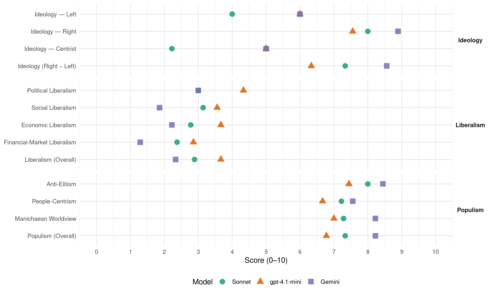

Jobbik (Hungary, 2014)
manifesto_id 86710_201404
Get full text: This site shows derived annotations and short verbatim quotes only. The full manifesto text is © Manifesto Project / WZB — obtain it via manifesto-project.wzb.eu using the manifesto_id above.
Headline scores
| Dimension | Sonnet | gpt-4.1-mini | Gemini |
|---|---|---|---|
| Populism (Overall) | 7.3 | 6.8 | 8.2 |
| Anti-Elitism | 8.0 | 7.4 | 8.4 |
| People-Centrism | 7.2 | 6.7 | 7.6 |
| Manichaean Worldview | 7.3 | 7.0 | 8.2 |
| Ideology (Right − Left) | 7.3 | 6.3 | 8.6 |
| Liberalism (Overall) | 2.9 | 3.7 | 2.3 |
| Political Liberalism | 3.0 | 4.3 | 3.0 |
| Social Liberalism | 3.1 | 3.6 | 1.9 |
| Economic Liberalism | 2.8 | 3.7 | 2.2 |
| Financial-Market Liberalism | 2.4 | 2.9 | 1.3 |
Evidence per dimension
Economic Liberalism
Gemini · score 2.0 · verified · chunk 1
“megtörjük a multinacionális bevásárlóközpontok egyeduralmát”
polcokra 80%-ban magyar termékeket tetetünk, megtörjük a multinacionális bevásárlóközpontok egyeduralmát és nemzetgazdaságunkat leépítő
Gemini · score 2.0 · verified · chunk 2
“beszállítókat védő nemzeti „diszkrimináció””
A beszállítókat védő nemzeti „diszkrimináció” miatt számítani lehet az EU ellenállására
Gemini · score 2.0 · verified · chunk 3
“multinacionális tőke szabad mozgására épülő globális kapitalizmus modellje megbukott”
3.1.2 Cseberből előre A multinacionális tőke szabad mozgására épülő globális kapitalizmus modellje megbukott. Emberek milliárdjai
Gemini · score 2.0 · verified · chunk 4
“a multinacionális tőke egyeduralmának. A legnagyobb szigorral”
szétvert magyar ipari kapacitások újbóli felépítését. ø A multinacionális tőke egyeduralmának. A legnagyobb szigorral fel fogunk lépni
Gemini · score 2.0 · verified · chunk 5
“nem lehet a szabad piac „láthatatlan kezére””
állattenyésztés és a növénytermesztés helyes, adottságainkhoz és lehetőségeinkhez illő aránya megbomlott. Ennek helyreállítását nem lehet a szabad piac „láthatatlan kezére” bízni, hanem állami beavatkozásra és aktivitásra
Gemini · score 2.0 · verified · chunk 6
“vissza kell venni állami kézbe”
szénhidrogén-kutatási tevékenységet vissza kell venni állami kézbe, a koncessziós szerződéseket felül kell vizsgálni.
Gemini · score 4.0 · verified · chunk 7
“kezdő vállalkozások fix, adminisztrációs terheinek csökkentése”
támogatását (pl. FIVOSZ). Fontos feladat a kezdő vállalkozások fix, adminisztrációs terheinek csökkentése és a piacra történő bevezetésüknek segítése
Gemini · score 2.0 · verified · chunk 8
“adminisztratív eszközökkel történő irányítása nyersanyagbeszerzéseik”
vendéglátósok adminisztratív eszközökkel történő irányítása nyersanyagbeszerzéseik során a hazai termékek felé.
Gemini · score 2.0 · verified · chunk 9
“földünk kiárusításának. A földmoratórium meghosszabbítását”
Aminek véget vetünk A földünk kiárusításának. A földmoratórium meghosszabbítását fogjuk elérni Brüsszellel
gpt-4.1-mini · score 3.0 · verified · chunk 1
“a mezőgazdaságra épül, amelyhez szorosan hozzátartozik a mezőgazdasághoz kötött élelmiszer-termelés”
A vidék a mezőgazdaságra épül, amelyhez szorosan hozzátartozik a mezőgazdasághoz kötött élelmiszer-termelés, a kézműipar, a hulladékgazdálkodás és -újrahasznosítás, a vízgazdálkodás és a megújuló energiatermelés összehangolása is.
gpt-4.1-mini · score 6.0 · verified · chunk 2
“a magyar építőipar számára történő állami megrendelések révén; a magyar építőipar beszállítói – bányák, téglagyárak, építőanyag-gyár tás stb. – körének fellendülését”
Mit jelentene a Jobbik OTN fejlesztési tervének megvalósulása? több 10 ezer munkahelyet a magyar építőipar számára történő állami megrendelések révén; a magyar építőipar beszállítói – bányák, téglagyárak, építőanyag-gyár tás stb. – körének fellendülését, és ezáltal több ezer új munkahely létrehozását; a magyar beszállítók előnyben részesítését a külföldiekkel szemben; 2020-ig a hazai lakhatási problémák döntő hányadának megoldását;
gpt-4.1-mini · score 3.0 · verified · chunk 3
“A multinacionális tőke szabad mozgására épülő globális kapitalizmus modellje megbukott.”
…A multinacionális tőke szabad mozgására épülő globális kapitalizmus modellje megbukott. Emberek milliárdjai nyomorodtak meg fizikailag és lelkileg, a társadalmi szakadék a világban tovább nőtt. A válság Magyarországon még pusztítóbb hatású volt, mert a globális folyamatok immár negyed évszázada kiegészülnek egy nemzetellenes és korrupt politikai vezetőréteg kártékony tevékenységével is…
gpt-4.1-mini · score 4.0 · verified · chunk 4
“a hazai kis- és középvállalkozásoknak: felső határt szabunk a 200 millió forint alatti árbevételű cégek összadójának”
Azonnali és jelentős segítséget nyújtunk a hazai kis- és középvállalkozásoknak: felső határt szabunk a 200 millió forint alatti árbevételű cégek összadójának, kiterjesztjük az átalányadózást, a közbeszerzések során előnyben részesítjük a magyar vállalkozásokat.
gpt-4.1-mini · score 3.0 · verified · chunk 5
“Felülvizsgáljuk a privatizációt. Az elrabolt állami vagyon még visszaszerezhető”
Felülvizsgáljuk a privatizációt. Az elrabolt állami vagyon még visszaszerezhető, mert semmis a privatizációs szerződés, ha nyilvánvalóan a jó erkölcsbe ütközik.
gpt-4.1-mini · score 3.0 · verified · chunk 6
“a kormányok profitérdekelt megoldásoknak adtak prioritást”
A kormányok profitérdekelt megoldásoknak adtak prioritást, a népegészségügyet, a prevenciót pedig elhanyagolták.
gpt-4.1-mini · score 4.0 · verified · chunk 7
“a Vidék Bankja koncepciót, amelyet a Jobbik javasolt már 2010-ben”
A Jobbik jogszabály-módosítással visszaállítja a takarékszövetkezetek önállóságát, a megfelelő tőkeellátottság, pénzügyi garanciavállalás és hitelkihelyezési szakértelem biztosításával annak érdekében, hogy a vidéki gazdálkodók, vállalkozók és magánszemélyek elegendő és olcsó hitelhez jussanak.
gpt-4.1-mini · score 3.0 · verified · chunk 8
“az uniós pénzek az ország érdekében és a hazai gazdasági szereplőkön keresztül hasznosuljanak”
Az uniós források pályáztatása és felhasználása kapcsán kialakult rendszer ésszerűsítését, a nemzeti érdekek alá rendelését és a korrupció kíméletlen felszámolását kötelező feladatnak tartjuk, hogy az uniós pénzek az ország érdekében és a hazai gazdasági szereplőkön keresztül hasznosuljanak.
gpt-4.1-mini · score 4.0 · verified · chunk 9
“a munkahelyteremtő, foglalkoztatás-növelő beruházások előtérbe helyezése”
Legalább négy területen szükséges előrelépni: a pályázati rendszer felülvizsgálata és egyszerűsítése, visszaéléseinek megszüntetése, támogatásainak célzottá tétele, a presztízsberuházásokkal szemben a munkahelyteremtő, foglalkoztatás-növelő beruházások előtérbe helyezése lenne a legfontosabb feladat.
Sonnet · score 2.0 · verified · chunk 1
“privatizációt és liberalizációt erőltető neoliberális gazdaságpolitikájukkal”
Az egymást váltó kormányok privatizációt és liberalizációt erőltető neoliberális gazdaságpolitikájukkal (pl. az EU követelményeinek minden áron való megfelelés következtében a védővámok leépítésével)
Sonnet · score 3.0 · verified · chunk 2
“minden multinacionális hátterű, árdrágító tényezőt kizártunk”
a rendszer nem kíván profitot kitermelni, így minden multinacionális hátterű, árdrágító tényezőt kizártunk
Sonnet · score 3.0 · verified · chunk 3
“neoliberális megközelítés kizárólagossá vált”
A neoliberális megközelítés kizárólagossá vált, amely a végletekig visszaszorította az állam tulajdonosi, szabályozó, ellenőrző és szankcionáló funkcióit
Sonnet · score 3.0 · verified · chunk 4
“multikat arra, hogy Magyarországon is ugyanolyan játékszabályok”
A Jobbik rá fogja kényszeríteni a multikat arra, hogy Magyarországon is ugyanolyan játékszabályok szerint játsszanak, mint a saját hazájukban.
Sonnet · score 2.0 · verified · chunk 5
“a neoliberális gazdasági modell egyértelműen megbukott”
A magánosítások egyetlen területen sem eredményeztek árcsökkentést. A neoliberális gazdasági modell egyértelműen megbukott, miközben az energiapiacok liberalizálásával
Sonnet · score 3.0 · verified · chunk 6
“szénhidrogén-kutatási tevékenységet vissza kell venni állami kézbe”
szénhidrogén-kutatási tevékenységet vissza kell venni állami kézbe, a koncessziós szerződéseket felül kell vizsgálni.
Sonnet · score 3.0 · verified · chunk 7
“adókedvezményeket biztosítunk”
Ehhez magánszemélyek és vállalkozások számára adókedvezményeket biztosítunk.
Sonnet · score 3.0 · verified · chunk 8
“hazai alapanyagok piaci szerepének erősödését”
A Jobbik stratégiai célja a magyar élelmiszertermelés minőségi és mennyiségi fejlesztése. Ennek fényében fontos feladat a vendéglátósok adminisztratív eszközökkel történő irányítása
Sonnet · score 3.0 · verified · chunk 9
“a versenyképességet korlátozó – kifizetési arány”
Az agrártámogatásunk sikerként hangoztatott bővülésének egyetlen oka a 2004-es csatlakozást megelőzően elfogadott 25%-ról induló – így a versenyképességet korlátozó – kifizetési arány.
Financial-Market Liberalism
Gemini · score 1.0 · verified · chunk 1
“a zömében külföldi tulajdonban álló kereskedelmi bankrendszer”
A magyar mezőgazdaságot a zömében külföldi tulajdonban álló kereskedelmi bankrendszer jelenleg nem hajlandó finanszírozni
Gemini · score 1.0 · verified · chunk 2
“devizahitelek felvételkori árfolyamon történő forintosításában”
A Jobbik a devizahitelek felvételkori árfolyamon történő forintosításában látja a megoldást. Csak így
Gemini · score 1.0 · verified · chunk 3
“devizahitelek felvételkori árfolyamon történő forintosításában”
1. Forintosítás. A Jobbik a devizahitelek felvételkori árfolyamon történő forintosításában látja a megoldást. Csak
Gemini · score 2.0 · verified · chunk 4
“a bankok hitelezési hajlandóságát is tovább kell növelnie”
vagy a vállalati hitelezés leállása. Az MNB-nek a bankok hitelezési hajlandóságát is tovább kell növelnie verbális intervencióval
Gemini · score 1.0 · verified · chunk 5
“bankokkal való összejátszás a devizahitelezés kapcsán”
kiskaput hagytak a törvényekben az olajügyekhez és a privatizációhoz, de büntetőjogi kérdés kell legyen Gyurcsány 2006-os tevékenysége, a bankokkal való összejátszás a devizahitelezés kapcsán, vagy akik más országok érdekeit
Gemini · score 2.0 · verified · chunk 7
“szankcionálni is azokat. ø A hungarikumok”
bankok, hanem szükség esetén szankcionálni is azokat. ø A hungarikumok körüli anomáliáknak. Az ún.
Gemini · score 1.0 · verified · chunk 9
“EU-val, a Nemzetközi Valutaalappal kötött szerződéseket”
szerződéseket újratárgyaljuk. A Jobbik ebbe a körbe sorolja az EU-val, a Nemzetközi Valutaalappal kötött szerződéseket, illetve a NATO-tagságunkból
gpt-4.1-mini · score 2.0 · verified · chunk 1
“a magyar mezőgazdaságot a zömében külföldi tulajdonban álló kereskedelmi bankrendszer jelenleg nem hajlandó finanszírozni”
A magyar mezőgazdaságot a zömében külföldi tulajdonban álló kereskedelmi bankrendszer jelenleg nem hajlandó finanszírozni, ezért azonnali kormányzati intézkedések szükségesek. A vidék bankja szakosított hitelintézetként működő, a mezőgazdasági termeléssel kapcsolatban szükséges piacismerettel rendelkező szövetkezeti bank (agrárbank) lenne.
gpt-4.1-mini · score 5.0 · verified · chunk 2
“a devizahitelek felvételkori árfolyamon történő forintosításában látja a megoldást”
1. Forintosítás. A Jobbik a devizahitelek felvételkori árfolyamon történő forintosításában látja a megoldást. Csak így hárítható vissza a kereskedelmi bankokra kártételük összes következménye, és csak így mentesíthetők a hitelkárosultak az indokolatlanul rájuk hárított költségektől.
gpt-4.1-mini · score 2.0 · verified · chunk 3
“Az MNB jelenleg gyakorlatilag semmilyen rendelkezésére álló eszközzel nem lép fel a magyarországi kereskedelmi bankok rendkívül káros piaci magatartásával szemben”
…Az MNB jelenleg gyakorlatilag semmilyen rendelkezésére álló eszközzel nem lép fel a magyarországi kereskedelmi bankok rendkívül káros piaci magatartásával szemben, mint amilyen a régiós összehasonlításban is kirívóan nagy forráskivonás vagy a vállalati hitelezés leállása. Az MNB-nek a bankok hitelezési hajlandóságát is tovább kell növelnie…
gpt-4.1-mini · score 3.0 · verified · chunk 4
“Az MNB jelenleg gyakorlatilag semmilyen rendelkezésére álló eszközzel nem lép fel a magyarországi kereskedelmi bankok rendkívül káros piaci magatartásával szemben”
Az MNB jelenleg gyakorlatilag semmilyen rendelkezésére álló eszközzel nem lép fel a magyarországi kereskedelmi bankok rendkívül káros piaci magatartásával szemben, mint amilyen a régiós összehasonlításban is kirívóan nagy forráskivonás vagy a vállalati hitelezés leállása.
gpt-4.1-mini · score 2.0 · verified · chunk 5
“gazdasági jellegű bűncselekmények esetén is lehessen halálbüntetést kiszabni”
Külön gazdaságvédelmi hivatal fog foglalkozni az ilyen jellegű ügyek feltárásával, továbbá, hogy a közpénzeket, közvagyont érintő gazdasági jellegű bűncselekmények esetén is lehessen halálbüntetést kiszabni.
gpt-4.1-mini · score 3.0 · verified · chunk 7
“a banki ágazati adóról ez már bevezetése után pár héttel kiderült”
Komoly szankciókat kell foganatosítani azon bankokkal szemben, amelyek áttételes módon, mégis adóelkerülési okokból terhelik meg ügyfeleiket, emelve a havidíjakat, hitelkártya-díjakat, átutalási költségeket.
gpt-4.1-mini · score 3.0 · verified · chunk 9
“az uniós pénzek az ország érdekében és a hazai gazdasági szereplőkön keresztül hasznosuljanak”
A Jobbik célja, hogy az uniós pénzek az ország érdekében és a hazai gazdasági szereplőkön keresztül hasznosuljanak. El szeretnénk érni, hogy az elnyert pályázatok esetében a folyamatosan változó jogszabályi környezet ne eredményezhesse a pályázatok újrastrukturálását.
Sonnet · score 2.0 · verified · chunk 1
“zömében külföldi tulajdonban álló kereskedelmi bankrendszer”
A magyar mezőgazdaságot a zömében külföldi tulajdonban álló kereskedelmi bankrendszer jelenleg nem hajlandó finanszírozni, ezért azonnali kormányzati intézkedések szükségesek.
Sonnet · score 2.0 · verified · chunk 2
“devizahitelek felvételkori árfolyamon történő forintosítását”
A Jobbik a devizahitelek felvételkori árfolyamon történő forintosításában látja a megoldást. Csak így hárítható vissza a kereskedelmi bankokra kártételük összes következménye
Sonnet · score 2.0 · verified · chunk 3
“devizahitelek felvételkori árfolyamon történő forintosításában”
A Jobbik a devizahitelek felvételkori árfolyamon történő forintosításában látja a megoldást
Sonnet · score 2.0 · verified · chunk 4
“állami tulajdonban lévő KKV Bankot”
Állami forrásokból, szükség esetén jegybanki devizatartalékból és uniós támogatásokból életre fogjuk hívni az állami tulajdonban lévő KKV Bankot
Sonnet · score 2.0 · verified · chunk 5
“a bankokkal való összejátszás a devizahitelezés kapcsán”
büntetőjogi kérdés kell legyen Gyurcsány 2006-os tevékenysége, a bankokkal való összejátszás a devizahitelezés kapcsán, vagy akik más országok érdekeit képviselték
Sonnet · score 3.0 · verified · chunk 7
“takarékszövetkezetek önállóságát”
A Jobbik jogszabály-módosítással visszaállítja a takarékszövetkezetek önállóságát, a megfelelő tőkeellátottság, pénzügyi garanciavállalás és hitelkihelyezési szakértelem biztosításával
Sonnet · score 3.0 · verified · chunk 8
“Magyarország uniós tagsága ráfizetéses”
A Jobbik továbbra is azt állítja, hogy Magyarország uniós tagsága ráfizetéses. Egy átfogó, a közvetett hatásokat is vizsgáló EU-mérleg elkészítésére van szükség
Sonnet · score 3.0 · verified · chunk 9
“az EU-val, a Nemzetközi Valutaalappal kötött szerződéseket”
A Jobbik ebbe a körbe sorolja az EU-val, a Nemzetközi Valutaalappal kötött szerződéseket, illetve a NATO-tagságunkból fakadó különböző, nemzeti érdekeink szempontjából nehezen értelmezhető nemzetközi katonai missziókban való magyar szerepvállalást.
Political Liberalism
Gemini · score 3.0 · verified · chunk 1
“a Fidesz- és az MSZP- kormányoktól is meg akarjuk szabadítani hazánkat”
Mi nem csupán az elmúlt négy évet akarjuk leváltani, hanem az elmúlt huszonnégyet. Mindenestől. A Fidesz- és az MSZP- kormányoktól is meg akarjuk szabadítani hazánkat, mert ők ketten
Gemini · score 3.0 · verified · chunk 2
“szembeszállhat Brüsszel akaratával”
arról szól, hogy egy tagállam igen is szembeszállhat Brüsszel akaratával. Bulgária ugyan később
Gemini · score 3.0 · verified · chunk 3
“alapfokú tanulmányaikat be nem fejezőktől megvonjuk a szavazati jogot”
cenzust vezetünk be, amelynek értelmében az alapfokú tanulmányaikat be nem fejezőktől megvonjuk a szavazati jogot.
Gemini · score 2.0 · verified · chunk 4
“ügynöki szervezetté nyilvánítását kezdeményezzük orosz minta alapján”
TASZ, Helsinki Bizottság, Amnesty Int. stb.) ügynöki szervezetté nyilvánítását kezdeményezzük orosz minta alapján.
Gemini · score 2.0 · verified · chunk 5
“ügynöki szervezetté nyilvánítását kezdeményezzük orosz minta”
TASZ, Helsinki Bizottság, Amnesty Int. stb.) ügynöki szervezetté nyilvánítását kezdeményezzük orosz minta alapján. ø A közbiztonságot erősíteni képes
Gemini · score 3.0 · verified · chunk 6
“internetes újságokat, híroldalakat próbálta cenzúra alá vonni”
Sajtótörvényei keretein belül a bloggereket és internetes újságokat, híroldalakat próbálta cenzúra alá vonni, majd aláírta az internet szabadságát
Gemini · score 3.0 · verified · chunk 7
“politikai médiamonopóliumoknak. Célunk a valódi médiapluralizmus”
3.13.2 Aminek véget vetünk ø A politikai médiamonopóliumoknak. Célunk a valódi médiapluralizmus megteremtése, és a véleménydiktatúrák ellenében megkezdjük
Gemini · score 6.0 · verified · chunk 8
“alkotmányos elveknek megfelelő törvények uralkodjanak”
hanem az alkotmányos elveknek megfelelő törvények uralkodjanak, és irányítsák az országot.
Gemini · score 2.0 · verified · chunk 9
“hírszerző, valamint elhárító szolgálatokat új külpolitikai elveinek”
a polgári és katonai hírszerző, valamint elhárító szolgálatokat új külpolitikai elveinek, elsősorban a magyar nemzeti
gpt-4.1-mini · score 3.0 · verified · chunk 1
“a Jobbik miniszterelnök-jelöltje”
Vona Gábor a Jobbik miniszterelnök-jelöltje 1. A Hét vezér terv Sokan várjuk már, hogy a magyar gazdaság végre beinduljon, különösen pedig azt, hogy ez a magyar emberek munkakörülményeit, életszínvonalát is javítsa végre, ne csupán a multinacionális tőke mutatóit.
gpt-4.1-mini · score 7.0 · verified · chunk 2
“a kormányzat részéről kiemelt fontosságú a kis- és közepes vállalkozások (kkv) informatikai fejlesztése, a „startup” cégek támogatása, a kutatás-fejlesztési aktivitás növelése, a digitális kompetenciák fejlesztése, e-közigazgatás kiterjesztése és mélyítése, valamint az oktatás bővítése”
A kormányzat részéről kiemelt fontosságú a kis- és közepes vállalkozások (kkv) informatikai fejlesztése, a „startup” cégek támogatása, a kutatás-fejlesztési aktivitás növelése, a digitális kompetenciák fejlesztése, e-közigazgatás kiterjesztése és mélyítése, valamint az oktatás bővítése mind az általános és középiskolákban, mind a szakirányú informatikus- és mérnökképzésben.
gpt-4.1-mini · score 5.0 · verified · chunk 3
“A tisztességes politika, a magyar érdekek érvényesítése, a szabad piacgazdaság, a jogállamiság, az európai integráció az emberek legnagyobb része számára mára kiüresedett szlogenekké váltak.”
…A rendszerváltás legfontosabb célkitűzései: a tisztességes politika, a magyar érdekek érvényesítése, a szabad piacgazdaság, a jogállamiság, az európai integráció az emberek legnagyobb része számára mára kiüresedett szlogenekké váltak. A 2002-ben kezdődött MSZP–SZDSZ-kormányzás a rendszerváltás kudarcot vallott gazdaságpolitikájának legrosszabb hagyományait folytatta…
gpt-4.1-mini · score 4.0 · verified · chunk 4
“az Országgyűlés gyakorolja törvényben is előírt felügyeleti és beszámoltatási jogait”
Kulcsfontosságú az is, hogy az MNB működése a lehető legátláthatóbb módon történjen, az Országgyűlés gyakorolja törvényben is előírt felügyeleti és beszámoltatási jogait. A jegybanki törvényben pedig előírjuk, hogy az MNB az árfolyam-stabilitás mellett a foglalkoztatás bővülésének szempontját is prioritásként kezelje politikájának tervezésekor és megvalósításakor.
gpt-4.1-mini · score 3.0 · verified · chunk 5
“A rendőrség hatékonyságát szellemi, fizikai és jogi szinten egyaránt javítani kell”
Új rendőrségi törvényt. A rendőrség hatékonyságát szellemi, fizikai és jogi szinten egyaránt javítani kell. A jogszabályi keretek átalakítása elengedhetetlen.
gpt-4.1-mini · score 4.0 · verified · chunk 6
“kötelezővé tesszük az önkormányzatok részére is az elektronikus ügyintézést”
Teljes körű elektronikus ügyintézési rendszert. Kötelezővé tesszük az önkormányzatok részére is az elektronikus ügyintézést, ennek keretében gondoskodunk a dolgozók átképzéséről és oktatásáról.
gpt-4.1-mini · score 5.0 · verified · chunk 7
“az új alaptörvényben hangsúlyosan szerepeljen a hazánk és kultúránk keresztény gyökereire történő utalás”
Szükségesnek tartjuk, hogy a korábbi alkotmányt felváltó új alaptörvényben hangsúlyosan szerepeljen a hazánk és kultúránk keresztény gyökereire történő utalás. A kereszténység – még akkor is, ha eltekintünk vallási jellegétől – önmagában is rendkívüli és az emberi léthez nélkülözhetetlen értékeket hordoz.
gpt-4.1-mini · score 4.0 · verified · chunk 8
“a magyar parlament jogkörét visszaadva”
A Nemzetek Európája koncepcióját képviseli, visszaadva a nemzeti parlamentek jogkörét. A jelenlegi keretek között is szorosabb ellenőrzési jogkört kell biztosítani az Országgyűlésnek a kormány EU-ban kifejtett tevékenysége felett.
gpt-4.1-mini · score 4.0 · verified · chunk 9
“parlamenti szinten is többször javasoltunk már”
Egy átfogó, a közvetett hatásokat is vizsgáló EU-mérleg elkészítésére van szükség, amit parlamenti szinten is többször javasoltunk már.
Sonnet · score 2.0 · verified · chunk 1
“valódi rendszerváltozást kínál”
gazdasági fellendülést, minőségi munkahelyeket, rendet és biztonságot, valamint határozott elszámoltatást és valódi rendszerváltozást kínál. Vessünk véget a süketelésnek
Sonnet · score 4.0 · verified · chunk 2
“Brüsszellel együtt, akár annak ellenére”
a leendő Jobbikkormány első lépése lesz, akár Brüsszellel együtt, akár annak ellenére. Erre az időnyerésre azért van szükségünk
Sonnet · score 3.0 · verified · chunk 3
“általános választói joggal szemben végzettségi cenzust”
Az általános választói joggal szemben végzettségi cenzust vezetünk be, amelynek értelmében az alapfokú tanulmányaikat be nem fejezőktől megvonjuk a szavazati jogot
Sonnet · score 3.0 · verified · chunk 4
“az MNB működése a lehető legátláthatóbb”
Kulcsfontosságú az is, hogy az MNB működése a lehető legátláthatóbb módon történjen, az Országgyűlés gyakorolja törvényben is előírt felügyeleti és beszámoltatási jogait.
Sonnet · score 2.0 · verified · chunk 5
“jogvédő szervezetek ügynöki szervezetté nyilvánítását”
kettősmércét alkalmazó… jogvédő szervezetek (TASZ, Helsinki Bizottság, Amnesty Int. stb.) ügynöki szervezetté nyilvánítását kezdeményezzük orosz minta alapján.
Sonnet · score 4.0 · mixed · chunk 6
“internetes cenzúrát. Eltöröljük a Fidesz–KDNP”
Eltöröljük a Fidesz–KDNP által bevezetett internetes cenzúrát. Elősegítjük a netsemlegesség elvének érvényre juttatását
Sonnet · score 3.0 · verified · chunk 7
“valódi médiapluralizmus megteremtése”
Célunk a valódi médiapluralizmus megteremtése, és a véleménydiktatúrák ellenében megkezdjük a tisztességes médiaviszonyok kialakítását.
Sonnet · score 4.0 · verified · chunk 8
“közvetlen népi hatalomgyakorlás megfelelő formáinak kiépülése”
Lényegi kérdés a közvetlen népi hatalomgyakorlás megfelelő formáinak kiépülése, különösen az alaptörvény elfogadására, megváltoztatására
Sonnet · score 3.0 · verified · chunk 9
“Népszavazást az uniós tagságunkról és viszonyunkról”
√ Népszavazást az uniós tagságunkról és viszonyunkról. Amennyiben az Unió továbbra is a brüsszeli központú birodalomépítés irányba halad, hazánknak meg kell fontolnia, hogy saját megmaradása érdekében kilépjen ebből a közösségből.
Liberalism (Overall)
Gemini · score 2.0 · verified · chunk 1
“megtörjük a multinacionális bevásárlóközpontok egyeduralmát”
polcokra 80%-ban magyar termékeket tetetünk, megtörjük a multinacionális bevásárlóközpontok egyeduralmát és nemzetgazdaságunkat leépítő
Gemini · score 2.0 · verified · chunk 2
“beszállítókat védő nemzeti „diszkrimináció””
A beszállítókat védő nemzeti „diszkrimináció” miatt számítani lehet az EU ellenállására
Gemini · score 2.0 · verified · chunk 3
“multinacionális tőke szabad mozgására épülő globális kapitalizmus modellje megbukott”
3.1.2 Cseberből előre A multinacionális tőke szabad mozgására épülő globális kapitalizmus modellje megbukott. Emberek milliárdjai
Gemini · score 2.0 · verified · chunk 4
“deviáns magatartásformákat és alternatív együttélési normákat hirdető”
család védelmére van szükség a deviáns magatartásformákat és alternatív együttélési normákat hirdető családellenes liberális támadásokkal szemben.
Gemini · score 2.0 · verified · chunk 5
“nem lehet a szabad piac „láthatatlan kezére””
állattenyésztés és a növénytermesztés helyes, adottságainkhoz és lehetőségeinkhez illő aránya megbomlott. Ennek helyreállítását nem lehet a szabad piac „láthatatlan kezére” bízni, hanem állami beavatkozásra és aktivitásra
Gemini · score 2.0 · verified · chunk 6
“vissza kell venni állami kézbe”
szénhidrogén-kutatási tevékenységet vissza kell venni állami kézbe, a koncessziós szerződéseket felül kell vizsgálni.
Gemini · score 3.0 · verified · chunk 7
“politikai médiamonopóliumoknak. Célunk a valódi médiapluralizmus”
3.13.2 Aminek véget vetünk ø A politikai médiamonopóliumoknak. Célunk a valódi médiapluralizmus megteremtése, és a véleménydiktatúrák ellenében megkezdjük
Gemini · score 4.0 · verified · chunk 8
“alkotmányos elveknek megfelelő törvények uralkodjanak”
hanem az alkotmányos elveknek megfelelő törvények uralkodjanak, és irányítsák az országot.
Gemini · score 2.0 · verified · chunk 9
“nemzeti szuverenitásunkat, érdekeinket sértő gazdasági”
szerződéseket. A nemzeti szuverenitásunkat, érdekeinket sértő gazdasági, kereskedelmi és politikai két-
gpt-4.1-mini · score 3.0 · verified · chunk 1
“a mezőgazdaságra épül, amelyhez szorosan hozzátartozik a mezőgazdasághoz kötött élelmiszer-termelés”
A vidék a mezőgazdaságra épül, amelyhez szorosan hozzátartozik a mezőgazdasághoz kötött élelmiszer-termelés, a kézműipar, a hulladékgazdálkodás és -újrahasznosítás, a vízgazdálkodás és a megújuló energiatermelés összehangolása is.
gpt-4.1-mini · score 6.0 · verified · chunk 2
“a kormányzat részéről kiemelt fontosságú a kis- és közepes vállalkozások (kkv) informatikai fejlesztése, a „startup” cégek támogatása, a kutatás-fejlesztési aktivitás növelése, a digitális kompetenciák fejlesztése, e-közigazgatás kiterjesztése és mélyítése, valamint az oktatás bővítése”
A kormányzat részéről kiemelt fontosságú a kis- és közepes vállalkozások (kkv) informatikai fejlesztése, a „startup” cégek támogatása, a kutatás-fejlesztési aktivitás növelése, a digitális kompetenciák fejlesztése, e-közigazgatás kiterjesztése és mélyítése, valamint az oktatás bővítése mind az általános és középiskolákban, mind a szakirányú informatikus- és mérnökképzésben.
gpt-4.1-mini · score 3.0 · verified · chunk 3
“A tisztességes politika, a magyar érdekek érvényesítése, a szabad piacgazdaság, a jogállamiság, az európai integráció az emberek legnagyobb része számára mára kiüresedett szlogenekké váltak.”
…A rendszerváltás legfontosabb célkitűzései: a tisztességes politika, a magyar érdekek érvényesítése, a szabad piacgazdaság, a jogállamiság, az európai integráció az emberek legnagyobb része számára mára kiüresedett szlogenekké váltak. A 2002-ben kezdődött MSZP–SZDSZ-kormányzás a rendszerváltás kudarcot vallott gazdaságpolitikájának legrosszabb hagyományait folytatta…
gpt-4.1-mini · score 3.0 · verified · chunk 4
“az Országgyűlés gyakorolja törvényben is előírt felügyeleti és beszámoltatási jogait”
Kulcsfontosságú az is, hogy az MNB működése a lehető legátláthatóbb módon történjen, az Országgyűlés gyakorolja törvényben is előírt felügyeleti és beszámoltatási jogait. A jegybanki törvényben pedig előírjuk, hogy az MNB az árfolyam-stabilitás mellett a foglalkoztatás bővülésének szempontját is prioritásként kezelje politikájának tervezésekor és megvalósításakor.
gpt-4.1-mini · score 3.0 · verified · chunk 5
“Felülvizsgáljuk a privatizációt. Az elrabolt állami vagyon még visszaszerezhető”
Felülvizsgáljuk a privatizációt. Az elrabolt állami vagyon még visszaszerezhető, mert semmis a privatizációs szerződés, ha nyilvánvalóan a jó erkölcsbe ütközik.
gpt-4.1-mini · score 3.0 · verified · chunk 6
“kötelezővé tesszük az önkormányzatok részére is az elektronikus ügyintézést”
Teljes körű elektronikus ügyintézési rendszert. Kötelezővé tesszük az önkormányzatok részére is az elektronikus ügyintézést, ennek keretében gondoskodunk a dolgozók átképzéséről és oktatásáról.
gpt-4.1-mini · score 4.0 · verified · chunk 7
“az új alaptörvényben hangsúlyosan szerepeljen a hazánk és kultúránk keresztény gyökereire történő utalás”
Szükségesnek tartjuk, hogy a korábbi alkotmányt felváltó új alaptörvényben hangsúlyosan szerepeljen a hazánk és kultúránk keresztény gyökereire történő utalás. A kereszténység – még akkor is, ha eltekintünk vallási jellegétől – önmagában is rendkívüli és az emberi léthez nélkülözhetetlen értékeket hordoz.
gpt-4.1-mini · score 4.0 · verified · chunk 8
“az uniós pénzek az ország érdekében és a hazai gazdasági szereplőkön keresztül hasznosuljanak”
Az uniós források pályáztatása és felhasználása kapcsán kialakult rendszer ésszerűsítését, a nemzeti érdekek alá rendelését és a korrupció kíméletlen felszámolását kötelező feladatnak tartjuk, hogy az uniós pénzek az ország érdekében és a hazai gazdasági szereplőkön keresztül hasznosuljanak.
gpt-4.1-mini · score 4.0 · verified · chunk 9
“a munkahelyteremtő, foglalkoztatás-növelő beruházások előtérbe helyezése”
Legalább négy területen szükséges előrelépni: a pályázati rendszer felülvizsgálata és egyszerűsítése, visszaéléseinek megszüntetése, támogatásainak célzottá tétele, a presztízsberuházásokkal szemben a munkahelyteremtő, foglalkoztatás-növelő beruházások előtérbe helyezése lenne a legfontosabb feladat.
Sonnet · score 2.0 · verified · chunk 1
“neoliberális gazdasági modell egyértelműen megbukott”
az árak drasztikusan nőttek, a neoliberális gazdasági modell egyértelműen megbukott. Az energiapiacok liberalizálásával az Európai Unióban óriási nemzetközi monopóliumok jöttek létre
Sonnet · score 4.0 · verified · chunk 2
“erőteljes állami szerepvállalás is szükséges”
Jól látszik, hogy erőteljes állami szerepvállalás is szükséges ezen a téren. Az energetika nemzetstratégiai szerepe
Sonnet · score 2.0 · verified · chunk 3
“erős és aktívan vállalkozó állami jelenlét”
amelyhez szükséges egy erős és aktívan vállalkozó állami jelenlét
Sonnet · score 3.0 · verified · chunk 4
“hazai termelőknek és gyártóknak arra, hogy a megfelelő”
hanem az, hogy a magyar gazdaság dualitását felszámoljuk, és esélyt adjunk a hazai termelőknek és gyártóknak arra, hogy a megfelelő, nyugat-európaihoz hasonló mértékben tudják kivenni a részüket
Sonnet · score 2.0 · verified · chunk 5
“az elmúlt huszonnégy év liberalizmus vidékellenessége”
Az elmúlt negyven év kommunizmus, majd az azt követő huszonnégy év liberalizmus vidékellenessége a történelem eddigi legnagyobb próbatétele elé állította a magyar vidéket.
Sonnet · score 3.0 · verified · chunk 6
“szénhidrogén-kutatási tevékenységet vissza kell venni állami kézbe”
szénhidrogén-kutatási tevékenységet vissza kell venni állami kézbe, a koncessziós szerződéseket felül kell vizsgálni.
Sonnet · score 3.0 · verified · chunk 7
“monopóliumellenes intézkedéseket alkalmazunk”
Jobbik megoldásai ebből következően logikusak: monopóliumellenes intézkedéseket alkalmazunk, majd priorizáljuk a lokális szereplők térnyerését.
Sonnet · score 4.0 · verified · chunk 8
“nemzeti önrendelkezést a jelenleginél nagyobb mértékben tartaná meg”
A Jobbik a Nemzetek Európája koncepcióját képviseli, amely az európai országok együttműködését úgy kívánja megvalósítani, hogy a nemzeti önrendelkezést a jelenleginél nagyobb mértékben tartaná meg
Sonnet · score 3.0 · verified · chunk 9
“egyoldalú euroatlanti függésünk megszüntetésével”
Magyarország jövőjét – Norvégiához, Svájchoz és Izlandhoz hasonlóan – az Európai Gazdasági Térségben, kapcsolatrendszerünk átalakításával, egyoldalú euroatlanti függésünk megszüntetésével képzeljük el.
Anti-Elitism
Gemini · score 9.0 · verified · chunk 1
“mindkét párt kormányai loptak, csaltak, hazudtak”
néhány kisebb pozitívnak mondható intézkedéssel együtt is, mindkét párt kormányai loptak, csaltak, hazudtak. A helyzetet persze
Gemini · score 8.0 · verified · chunk 2
“korábbi kormányzatok által kimunkált”
Ezzel szemben a korábbi kormányzatok által kimunkált „szocpolt” az utolsó ciklus
Gemini · score 9.0 · verified · chunk 3
“nemzetellenes és korrupt politikai vezetőréteg kártékony tevékenységével”
globális folyamatok immár negyed évszázada kiegészülnek egy nemzetellenes és korrupt politikai vezetőréteg kártékony tevékenységével is. A globális
Gemini · score 8.0 · verified · chunk 4
“az egymást váltó MSZP–SZDSZ és Fidesz–KDNP-kormányok bűnei”
3.2.3 Huszonnégy év után Az egymást váltó MSZP–SZDSZ és Fidesz–KDNP-kormányok bűnei, ciklusokon átívelően, szisztematikusan tönkretették
Gemini · score 9.0 · verified · chunk 5
“elmúlt 24 év politikusbűnözőit is elszámoltatjuk”
titkosította. Ha nincs félnivalójuk, miért őrizgetik ezeket a dokumentumokat? Az elmúlt 24 év politikusbűnözőit is elszámoltatjuk. Visszaéléseinek feltárása céljából életre hívjuk
Gemini · score 8.0 · verified · chunk 6
“a multinacionális cégek piacává vált”
hibás döntéseinek következtében hazánk informatikai fejlesztő és megoldásszállító helyett a multinacionális cégek piacává vált. Évi több tízmilliárd
Gemini · score 8.0 · verified · chunk 7
“kádárjugendet” ki kell söpörni a kulcspozíciókból”
Meg kell valósítani a Magyar kultúra rendszerváltozását, és a jelenlegi kulturális „kádárjugendet” ki kell söpörni a kulcspozíciókból. 3.11.3 Aminek
Gemini · score 8.0 · verified · chunk 8
“az elmúlt huszonnégy év kormányai”
Mivel az elmúlt huszonnégy év kormányai egy területet sem képesek felmutatni
Gemini · score 9.0 · verified · chunk 9
“politikai korrupció feneketlen kútjában”
a politikai korrupció feneketlen kútjában, míg egy harmadik része jobbára értelmetlen
gpt-4.1-mini · score 9.0 · verified · chunk 1
“mindkét párt kormányai loptak, csaltak, hazudtak”
sorozatosan becsapták, megalázták és meglopták őket. Mert mondjuk ki egyértelműen: néhány kisebb pozitívnak mondható intézkedéssel együtt is, mindkét párt kormányai loptak, csaltak, hazudtak. A helyzetet persze egyik is, másik is igyekszik megmagyarázni, felcicomázni, de az értékeléshez nincs más dolgunk, mint hinni a saját szemünknek, fülünknek és eszünknek.
gpt-4.1-mini · score 7.0 · verified · chunk 2
“a magyar nemzetgazdaság növekedési kilátásait mélyen aláássa az a jelenség, hogy a lakosság egy meghatározó része a hazai fogyasztás, a kis és közepes méretű magyar vállalkozásoknál történő vásárlás helyett jellemzően külföldi hátterű pénzintézetek számára törleszt”
Mára a nagyobb kutatóintézetek is elismerik, hogy a magyar nemzetgazdaság növekedési kilátásait mélyen aláássa az a jelenség, hogy a lakosság egy meghatározó része a hazai fogyasztás, a kis és közepes méretű magyar vállalkozásoknál történő vásárlás helyett jellemzően külföldi hátterű pénzintézetek számára törleszt. Az is köztudottá vált, hogy ezen hitelszerződések megkötése legalábbis labilis jogi környezetben, minősített visszaélések mellett és sok esetben hitelközvetítői végzettséggel nem rendelkező ügynökök „segítségével” történt.
gpt-4.1-mini · score 8.0 · verified · chunk 3
“Gyurcsány Ferenc és kormánya „ráengedte” a pénzügyi szinten gyarmatosító osztrák, olasz és német bankokat a gyanútlan magyar polgárokra.”
…sem pedig az akkori ellenzék nem emelte fel hangját kellő eréllyel, így osztoznak a felelősségben. Gyurcsány Ferenc és kormánya „ráengedte” a pénzügyi szinten gyarmatosító osztrák, olasz és német bankokat a gyanútlan magyar polgárokra. Amikor pedig a legnagyobb hazai bankok felismerték…
gpt-4.1-mini · score 8.0 · verified · chunk 4
“multinacionális tőke egyeduralmának”
A legnagyobb szigorral fel fogunk lépni minden tisztességtelen piaci magatartással szemben, legyen az a fogyasztók becsapása, a hazai beszállítók kizsigerelése, az erőfölénnyel való visszaélés, az egyoldalú szerződésmódosítás. Ehhez át kell alakítani a jelenlegi jogszabályi környezetet: drasztikusan meg kell emelni a büntetési tételeket, és nagymértékben meg kell erősíteni az ellenőrző állami szervezeteket. Meg fogjuk akadályozni, hogy a multik különböző trükkökkel kivigyék a profitot az országból, minimalizálva a Magyarországon fizetett adót, és kihúzva magukat az igazságos közteherviselés alól.
gpt-4.1-mini · score 8.0 · verified · chunk 5
“MSZP 2002 és 2010 között megalapozta a jelenlegi tarthatatlan helyzetet”
Az MSZP 2002 és 2010 között megalapozta a jelenlegi tarthatatlan helyzetet. A rendőrség állapota egzisztenciális, morális és fizikai szempontból egyaránt és folyamatosan romlott.
gpt-4.1-mini · score 7.0 · verified · chunk 6
“a kormány csak működésének negyedik évében jutott el a bővítésre vonatkozó”
Sajnáljuk, hogy a kormány csak működésének negyedik évében jutott el a bővítésre vonatkozó, 2009. áprilisi országgyűlési határozatban előírtakat teljesíteni képes megállapodásig Oroszországgal.
gpt-4.1-mini · score 7.0 · verified · chunk 7
“a kultúra vezető pozícióiban maradtak a szocialista rendszer megmondó emberei”
Az úgynevezett rendszerváltozás után, az MDF-féle „bársonyos” átmenet következtében, a kultúra vezető pozícióiban maradtak a szocialista rendszer megmondó emberei, akik moszkovita kommunistából hirtelen nyugatos liberálisok lettek.
gpt-4.1-mini · score 6.0 · verified · chunk 8
“a kormányzati támogatásukat tekintve egyik sem lehet egyeduralkodó”
A Jobbik támogat minden olyan turisztikai irányvonalat, amely speciális igényeket elégít ki (vadászati, lovas-, konferencia-, gasztro-, vallási stb. turizmus), azonban a kormányzati támogatásukat tekintve egyik sem lehet egyeduralkodó, nem növekedhet kirívóan a másik kárára.
gpt-4.1-mini · score 7.0 · verified · chunk 9
“az uniós források körüli korrupciónak és igazságtalanságoknak”
ø Az uniós források körüli korrupciónak és igazságtalanságoknak. Az uniós források pályáztatása és felhasználása kapcsán kialakult rendszer ésszerűsítését, a nemzeti érdekek alá rendelését és a korrupció kíméletlen felszámolását kötelező feladatnak tartjuk.
Sonnet · score 9.0 · verified · chunk 1
“mindkét párt kormányai loptak, csaltak, hazudtak”
mondjuk ki egyértelműen: néhány kisebb pozitívnak mondható intézkedéssel együtt is, mindkét párt kormányai loptak, csaltak, hazudtak. A helyzetet persze egyik is, másik is igyekszik megmagyarázni
Sonnet · score 7.0 · verified · chunk 2
“40 évnyi kommunizmus és 24 évnyi globalista neoliberalizmus”
nem ideális laboratóriumi körülmények között foghat majd hozzá, hanem egy 40 évnyi kommunizmus és 24 évnyi globalista neoliberalizmus által szétvert és megnyomorított Magyarországon
Sonnet · score 9.0 · verified · chunk 3
“nemzetellenes és korrupt politikai vezetőréteg”
a globális folyamatok immár negyed évszázada kiegészülnek egy nemzetellenes és korrupt politikai vezetőréteg kártékony tevékenységével is
Sonnet · score 8.0 · verified · chunk 4
“multik különböző trükkökkel kivigyék a profitot”
Meg fogjuk akadályozni, hogy a multik különböző trükkökkel kivigyék a profitot az országból, minimalizálva a Magyarországon fizetett adót
Sonnet · score 9.0 · verified · chunk 5
“Az MSZP és a Fidesz közös felelősséget visel”
A MSZP még a látszatra sem adott, nyíltan vállalta a hazaáruló szerepét… Az MSZP és a Fidesz közös felelősséget visel a magyar vidék, a mezőgazdaság… tönkremeneteléért.
Sonnet · score 7.0 · verified · chunk 6
“balliberális kultúrkör kegyét keresta”
Az 1990 utáni kormányok közös bűne, hogy politikai színtől függetlenül folyamatosan ezen balliberális kultúrkör kegyét kereste és azzal igyekezett a lehető legjobb együttműködésre.
Sonnet · score 8.0 · verified · chunk 7
“balliberális kultúrkör kegyét kereste”
Az 1990 utáni kormányok közös bűne, hogy politikai színtől függetlenül folyamatosan ezen balliberális kultúrkör kegyét keresta és azzal igyekezett a lehető legjobb együttműködésre.
Sonnet · score 7.0 · verified · chunk 8
“az elmúlt huszonnégy év kormányai”
Mivel az elmúlt huszonnégy év kormányai egy területet sem képesek felmutatni ennyi idő után, amelyben sikeresnek lennének nevezhetőek
Sonnet · score 8.0 · verified · chunk 9
“mindkét rendszerpárt – a Fidesz és az MSZP is – sokat mazsolázott a terveinkből”
Azóta mindkét rendszerpárt – a Fidesz és az MSZP is – sokat mazsolázott a terveinkből, de azokat csak elrontani tudták.
Ideology — Centrist
Gemini · score 5.0 · verified · chunk 1
“új fejezetet akarunk nyitni Magyarország és a magyar emberek számára”
meg kell szabadulni. Mi, jobbikosok ezért új fejezetet akarunk nyitni Magyarország és a magyar emberek számára. El akarjuk kezdeni
gpt-4.1-mini · score 6.0 · verified · chunk 1
“azoknak akarunk választható, erős és kormányképes alternatívát kínálni”
ezzel a mostani választási programmal ezért azoknak akarunk választható, erős és kormányképes alternatívát kínálni, akiknek mind a Fidesz, mind az MSZP kormányzásából elege van, akik úgy érzik, hogy az elmúlt 24 év egy tévút, akik úgy érzik, hogy sorozatosan becsapták, megalázták és meglopták őket.
gpt-4.1-mini · score 5.0 · verified · chunk 2
“a kormányzat részéről kiemelt fontosságú a kis- és közepes vállalkozások (kkv) informatikai fejlesztése, a „startup” cégek támogatása, a kutatás-fejlesztési aktivitás növelése”
A kormányzat részéről kiemelt fontosságú a kis- és közepes vállalkozások (kkv) informatikai fejlesztése, a „startup” cégek támogatása, a kutatás-fejlesztési aktivitás növelése, a digitális kompetenciák fejlesztése, e-közigazgatás kiterjesztése és mélyítése, valamint az oktatás bővítése mind az általános és középiskolákban, mind a szakirányú informatikus- és mérnökképzésben.
gpt-4.1-mini · score 5.0 · verified · chunk 3
“A társadalom széles köreinek elementáris erejű követelése e helyzet rendbetétele”
…minősített visszaélések mellett és sok esetben hitelközvetítői végzettséggel nem rendelkező ügynökök „segítségével” történt. A társadalom széles köreinek elementáris erejű követelése e helyzet rendbetétele, hiszen a probléma makrogazdasági szinten azokat is sújtja…
gpt-4.1-mini · score 6.0 · verified · chunk 4
“a magyar emberek gazdasági kiszolgáltatottsága túl van a tűrési határon”
A Magyar emberek gazdasági kiszolgáltatottsága túl van a tűrési határon, legyenek munkaadók, munkavállalók vagy munkanélküliek. A magyar foglalkoztatáspolitika feladata, hogy a magyar munkahelyek mind mennyiségben, mind minőségben megfelelő módon segítsék a magyar családok megélhetését és egyben a magyar gazdaság fejlődését.
gpt-4.1-mini · score 4.0 · verified · chunk 5
“kettős kommunikáció. Gyakori a valós probléma helyes felismerése”
Az egész rendvédelmet eluralta a kettős kommunikáció. Gyakori a valós probléma helyes felismerése, különösen úgy, hogy arra a Jobbik rendszeresen felhívja a figyelmet.
gpt-4.1-mini · score 4.0 · verified · chunk 7
“a civilszférát a magyar társadalom önszerveződése, bizonyos állami feladatok segítése és részben átvállalása szempontjából kiemelt jelentőségűnek tartjuk”
A civilszférát a magyar társadalom önszerveződése, bizonyos állami feladatok segítése és részben átvállalása szempontjából kiemelt jelentőségűnek tartjuk, a jogszabályalkotás folyamatában az érintett civil szervezetek véleményére kiemelten számítunk.
gpt-4.1-mini · score 5.0 · verified · chunk 8
“a Nemzetek Európája koncepcióját képviseli”
A Jobbik a Nemzetek Európája koncepcióját képviseli, amely az európai országok együttműködését úgy kívánja megvalósítani, hogy a nemzeti önrendelkezést a jelenleginél nagyobb mértékben tartaná meg.
gpt-4.1-mini · score 5.0 · verified · chunk 9
“Nem fogja tűrni a tabukat”
A Jobbik nem fogja tűrni a tabukat. A jó külpolitikához kell a diplomáciai érzék, de szükséges a magunk helyzetével kapcsolatos kíméletlen őszinteség is.
Sonnet · score 3.0 · verified · chunk 1
“pártállástól függetlenül nyilvánvalóan mindenki érdekelt”
ez a magyar emberek munkakörülményeit, életszínvonalát is javítsa végre, ne csupán a multinacionális tőke mutatóit. Ebben pártállástól függetlenül nyilvánvalóan mindenki érdekelt.
Sonnet · score 2.0 · verified · chunk 2
“Kimondjuk, megoldjuk!”
A Hét vezér terv a Jobbik Kimondjuk, megoldjuk! programjának azt a hét pillérét foglalta össze
Sonnet · score 2.0 · verified · chunk 3
“a magyar emberek boldogulását segítő aktív államot”
fenntartható, nemzeti érdekeken alapuló intézkedéseket… a hazai termelést és a magyar emberek boldogulását segítő aktív államot
Sonnet · score 2.0 · verified · chunk 4
“fő gazdaságpolitikai céljai évek óta változatlanok”
A Jobbik fő gazdaságpolitikai céljai évek óta változatlanok: fenntartható, nemzeti érdekeken alapuló intézkedéseket
Sonnet · score 2.0 · verified · chunk 5
“Törvények előtti egyenlőséget!”
Eltöröljük a mentelmi jogot. A politikus ugyanolyan ember, mint bárki más. Törvények előtti egyenlőséget!
Sonnet · score 2.0 · verified · chunk 6
“huszonnégy év távlatából elmondható”
Huszonnégy év távlatából elmondható, hogy a mindenkori kormányok közösen felelősek az egészségügy jelenlegi helyzetéért.
Sonnet · score 2.0 · verified · chunk 7
“politikai színtől függetlenül”
Az 1990 utáni kormányok közös bűne, hogy politikai színtől függetlenül folyamatosan ezen balliberális kultúrkör kegyét kereste
Sonnet · score 3.0 · verified · chunk 8
“a nemzeti érdekekért akár a valódi konfrontációt”
A Jobbik a nemzeti érdekekért akár a valódi konfrontációt is vállalja Brüsszellel.
Sonnet · score 2.0 · verified · chunk 9
“Csupán megélhetést, rendet és elszámoltatást”
Ezek a célok az Ön céljai is. Csupán megélhetést, rendet és elszámoltatást szeretnénk Magyarországon. Ez kell a szebb jövőhöz.
Ideology — Left
Gemini · score 7.0 · verified · chunk 1
“megtörjük a multinacionális bevásárlóközpontok egyeduralmát”
polcokra 80%-ban magyar termékeket tetetünk, megtörjük a multinacionális bevásárlóközpontok egyeduralmát és nemzetgazdaságunkat leépítő
Gemini · score 7.0 · verified · chunk 2
“multinacionális hátterű, árdrágító tényezőt kizártunk”
nem kíván profitot kitermelni, így minden multinacionális hátterű, árdrágító tényezőt kizártunk. Ezt támasztja alá
Gemini · score 8.0 · verified · chunk 3
“visszaállítja a többkulcsos, sávos személyi jövedelemadót”
A Jobbik ezért visszaállítja a többkulcsos, sávos személyi jövedelemadót a társadalmi igazságosság jegyében.
Gemini · score 6.0 · verified · chunk 4
“visszaállítja a többkulcsos, sávos személyi jövedelemadót”
helyzetbe. A Jobbik ezért visszaállítja a többkulcsos, sávos személyi jövedelemadót a társadalmi igazságosság jegyében.
Gemini · score 4.0 · verified · chunk 5
“oligarcháknak szolgáltatja ki az országot”
vidékmentő szerepben tetszeleg, Júdás-pénzért díszgazdákat mutat fel maga mellett, miközben ígéretével ellentétben az oligarcháknak szolgáltatja ki az országot.
Gemini · score 6.0 · verified · chunk 6
“vissza kell venni állami kézbe”
szénhidrogén-kutatási tevékenységet vissza kell venni állami kézbe, a koncessziós szerződéseket felül kell vizsgálni.
Gemini · score 4.0 · verified · chunk 8
“csak a tehetősek lehetősége”
gyógyturizmust is csak a tehetősek lehetőségének hagyta meg, a gyógyulás
gpt-4.1-mini · score 7.0 · verified · chunk 1
“tisztességes megélhetést biztosító magyar munkahelyeket”
a mezőgazdaság és késztermék-orientált élelmiszeripar fellendülése révén az arra épülő feldolgozóiparba, gépgyártásba és egyéb ágazatokba is életet lehelünk, ezzel minimum százezer tisztességes megélhetést biztosító munkahelyet hozunk létre már az első ciklusban.
gpt-4.1-mini · score 6.0 · verified · chunk 2
“a magyar nemzetgazdaság növekedési kilátásait mélyen aláássa az a jelenség, hogy a lakosság egy meghatározó része a hazai fogyasztás, a kis és közepes méretű magyar vállalkozásoknál történő vásárlás helyett jellemzően külföldi hátterű pénzintézetek számára törleszt”
Mára a nagyobb kutatóintézetek is elismerik, hogy a magyar nemzetgazdaság növekedési kilátásait mélyen aláássa az a jelenség, hogy a lakosság egy meghatározó része a hazai fogyasztás, a kis és közepes méretű magyar vállalkozásoknál történő vásárlás helyett jellemzően külföldi hátterű pénzintézetek számára törleszt. Az is köztudottá vált, hogy ezen hitelszerződések megkötése legalábbis labilis jogi környezetben, minősített visszaélések mellett és sok esetben hitelközvetítői végzettséggel nem rendelkező ügynökök „segítségével” történt.
gpt-4.1-mini · score 6.0 · verified · chunk 3
“A Jobbik szerint Magyarországon ökoszociális nemzetgazdaságra van szükség.”
…globális kapitalizmus helyett a jövőben az élelmiszertermelés, a kereskedelem, a közbiztonság, az energiaellátás és más területek tervezésében és lebonyolításában egyre több feladat hárul majd a helyi szerveződésekre. A Jobbik szerint Magyarországon ökoszociális nemzetgazdaságra van szükség. A gazdaságot az emberhez méltó környezet (öko-), az emberhez méltó élet (szociális) és a magyarság (nemzet) érdekében ésszerű és hatékony korlátok alá kell vetni…
gpt-4.1-mini · score 7.0 · verified · chunk 4
“fenntartható, nemzeti érdekeken alapuló intézkedéseket”
A Jobbik fő gazdaságpolitikai céljai évek óta változatlanok: fenntartható, nemzeti érdekeken alapuló intézkedéseket, átlátható és reális költségvetési tervezést, a hazai termelést és a magyar emberek boldogulását segítő aktív államot, az értékteremtő munka, a dolgozó ember nagyobb megbecsültségét, az ökonómia és az ökológia harmóniáját, valamint korrupciómentes, tiszta közéletet kívánunk elérni.
gpt-4.1-mini · score 6.0 · verified · chunk 5
“kommunista vezetőket kizárjuk a közéletből és az állami cégek éléről”
A kommunista vezetőket kizárjuk a közéletből és az állami cégek éléről. Lusztrációs törvényt hozunk, hogy az MSZMP és a KISZ országos vezetőit kizárjuk a közéleti szerepvállalás magasabb fórumairól.
gpt-4.1-mini · score 5.0 · verified · chunk 6
“a kormányok profitérdekelt megoldásoknak adtak prioritást”
A kormányok profitérdekelt megoldásoknak adtak prioritást, a népegészségügyet, a prevenciót pedig elhanyagolták.
gpt-4.1-mini · score 5.0 · verified · chunk 7
“a kultúra vezető pozícióiban maradtak a szocialista rendszer megmondó emberei”
Az úgynevezett rendszerváltozás után, az MDF-féle „bársonyos” átmenet következtében, a kultúra vezető pozícióiban maradtak a szocialista rendszer megmondó emberei, akik moszkovita kommunistából hirtelen nyugatos liberálisok lettek.
gpt-4.1-mini · score 6.0 · verified · chunk 8
“a külhoni magyarok gazdasági megerősítésére kell ösztönözni”
Határokon átnyúló gazdasági programot kell kidolgozni, a hazai vállalatokat külhoni befektetésekre, munkahelyek teremtésére, ezáltal a magyar közösségek gazdasági megerősítésére kell ösztönözni.
gpt-4.1-mini · score 6.0 · verified · chunk 9
“a munkahelyteremtő, foglalkoztatás-növelő beruházások előtérbe helyezése”
Legalább négy területen szükséges előrelépni: a pályázati rendszer felülvizsgálata és egyszerűsítése, visszaéléseinek megszüntetése, támogatásainak célzottá tétele, a presztízsberuházásokkal szemben a munkahelyteremtő, foglalkoztatás-növelő beruházások előtérbe helyezése lenne a legfontosabb feladat.
Sonnet · score 6.0 · verified · chunk 1
“multinacionális tőke mutatóit”
ez a magyar emberek munkakörülményeit, életszínvonalát is javítsa végre, ne csupán a multinacionális tőke mutatóit. Ebben pártállástól függetlenül nyilvánvalóan mindenki érdekelt.
Sonnet · score 5.0 · verified · chunk 2
“devizahitelek felvételkori árfolyamon történő forintosítását”
A Jobbik a devizahitelek felvételkori árfolyamon történő forintosításában látja a megoldást. Csak így hárítható vissza a kereskedelmi bankokra kártételük összes következménye
Sonnet · score 6.0 · verified · chunk 3
“multinacionális tőke egyeduralmának”
A legnagyobb szigorral fel fogunk lépni minden tisztességtelen piaci magatartással szemben… A multinacionális tőke egyeduralmának
Sonnet · score 5.0 · verified · chunk 4
“visszaállítja a többkulcsos, sávos személyi jövedelemadót”
A Jobbik ezért visszaállítja a többkulcsos, sávos személyi jövedelemadót a társadalmi igazságosság jegyében.
Sonnet · score 3.0 · verified · chunk 5
“A kommunista luxusnyugdíjakat visszavágjuk”
A kommunista luxusnyugdíjakat visszavágjuk. Az így megspórolt milliárdokat elosztjuk a kisnyugdíjasok között.
Sonnet · score 3.0 · verified · chunk 6
“multinacionális cégek piacává vált”
hazánk informatikai fejlesztő és megoldásszállító helyett a multinacionális cégek piacává vált. Évi több tízmilliárd forintot költünk
Sonnet · score 2.0 · verified · chunk 7
“virtuálisan keringő tőke többszörösére duzzadt”
miközben a virtuálisan keringő tőke többszörösére duzzadt a reálgazdaságnak, eközben van egy más, éppen ellentétes előjelű folyamat is
Sonnet · score 3.0 · verified · chunk 8
“csak a gazdag emberek kiváltsága”
a kongó ürességű tb-kassza miatt csak a gazdag emberek kiváltsága az üdülőhelyi gyógycentrumok szolgáltatásainak igénybevétele
Sonnet · score 3.0 · verified · chunk 9
“a korrupció kíméletlen felszámolását kötelező feladatnak”
Az uniós források pályáztatása és felhasználása kapcsán kialakult rendszer ésszerűsítését, a nemzeti érdekek alá rendelését és a korrupció kíméletlen felszámolását kötelező feladatnak tartjuk.
Ideology (Right − Left)
Gemini · score 8.0 · verified · chunk 1
“a föld és a víz magyar tulajdonban marad”
konfliktus árán is egyértelműsíteni: a föld és a víz magyar tulajdonban marad, és ennek alkotmányos
Gemini · score 8.0 · verified · chunk 2
“magyar föld magyar tulajdonban tartása”
A magyar föld magyar tulajdonban tartása állami szuverenitásunk alapja, nemzetstratégiai
Gemini · score 9.0 · verified · chunk 3
“nemzetellenes és korrupt politikai vezetőréteg”
globális folyamatok immár negyed évszázada kiegészülnek egy nemzetellenes és korrupt politikai vezetőréteg kártékony tevékenységével is.
Gemini · score 9.0 · verified · chunk 4
“a határon túli magyarlakta területeket is”
gazdaság politikában gondolkodik, így a határon túli magyarlakta területeket is a létrehozandó egységes magyar gazdasági
Gemini · score 9.0 · verified · chunk 5
“liberális nemzetközi lobbi elvárásai előtt hódolt”
Magyar Gárda ügyében Gyurcsány Ferenc, Bajnai Gordon és Orbán Viktor nem a társadalmi igénynek, hanem egyaránt a liberális nemzetközi lobbi elvárásai előtt hódolt meg, nyilván a saját maguk felfogásának
Gemini · score 8.0 · verified · chunk 6
“nemzeti és keresztény magyar kultúrától”
kommunistából hirtelen nyugatos liberálisok lettek. A váltás azonban csak látszólag volt nagy, hiszen akkor is, most is egy dolog jellemezte ezt a kör igazán: a nemzeti és keresztény magyar kultúrától való viszolygás
Gemini · score 9.0 · verified · chunk 7
“nemzeti és keresztény magyar kultúrától való”
egy dolog jellemezte ezt a kör igazán: a nemzeti és keresztény magyar kultúrától való viszolygás, annak folyamatos gúnyolása, tiprása
Gemini · score 8.0 · verified · chunk 8
“elszakított magyar közösségek önrendelkezési törekvéseinek”
legfontosabb céljai között határozzuk meg az elszakított magyar közösségek önrendelkezési törekvéseinek támogatását
Gemini · score 9.0 · verified · chunk 9
“magyar nemzet újraegyesítését”
legfontosabb feladatának tekinti a XX. század során igazságtalanul szétszakított magyar nemzet újraegyesítését. Alapvető erkölcsi kötelességünk
gpt-4.1-mini · score 7.0 · verified · chunk 1
“mindkét párt kormányai loptak, csaltak, hazudtak”
sorozatosan becsapták, megalázták és meglopták őket. Mert mondjuk ki egyértelműen: néhány kisebb pozitívnak mondható intézkedéssel együtt is, mindkét párt kormányai loptak, csaltak, hazudtak.
gpt-4.1-mini · score 6.0 · verified · chunk 2
“a magyar föld magyar tulajdonban tartása állami szuverenitásunk alapja, nemzetstratégiai elsődleges ügy”
A magyar föld magyar tulajdonban tartása állami szuverenitásunk alapja, nemzetstratégiai elsődleges ügy, így ezt nem bízhatjuk helyi bizottságokra. Törvényben kell garantálni.
gpt-4.1-mini · score 6.0 · verified · chunk 3
“A Jobbik szerint Magyarországon ökoszociális nemzetgazdaságra van szükség.”
…globális kapitalizmus helyett a jövőben az élelmiszertermelés, a kereskedelem, a közbiztonság, az energiaellátás és más területek tervezésében és lebonyolításában egyre több feladat hárul majd a helyi szerveződésekre. A Jobbik szerint Magyarországon ökoszociális nemzetgazdaságra van szükség. A gazdaságot az emberhez méltó környezet (öko-), az emberhez méltó élet (szociális) és a magyarság (nemzet) érdekében ésszerű és hatékony korlátok alá kell vetni…
gpt-4.1-mini · score 7.0 · verified · chunk 4
“fenntartható, nemzeti érdekeken alapuló intézkedéseket”
A Jobbik fő gazdaságpolitikai céljai évek óta változatlanok: fenntartható, nemzeti érdekeken alapuló intézkedéseket, átlátható és reális költségvetési tervezést, a hazai termelést és a magyar emberek boldogulását segítő aktív államot, az értékteremtő munka, a dolgozó ember nagyobb megbecsültségét, az ökonómia és az ökológia harmóniáját, valamint korrupciómentes, tiszta közéletet kívánunk elérni.
gpt-4.1-mini · score 7.0 · verified · chunk 5
“kommunista vezetőket kizárjuk a közéletből és az állami cégek éléről”
A kommunista vezetőket kizárjuk a közéletből és az állami cégek éléről. Lusztrációs törvényt hozunk, hogy az MSZMP és a KISZ országos vezetőit kizárjuk a közéleti szerepvállalás magasabb fórumairól.
gpt-4.1-mini · score 6.0 · verified · chunk 6
“a magyar nemzet nem beteg, hanem a magyar nemzetet megbetegítették”
Az a nemzet pedig, amelynek a lelkét megmérgezik, annak előbb-utóbb a fizikai állapota is leromlik. Ez történt velünk az elmúlt hetven évben.
gpt-4.1-mini · score 6.0 · verified · chunk 7
“a kultúra vezető pozícióiban maradtak a szocialista rendszer megmondó emberei”
Az úgynevezett rendszerváltozás után, az MDF-féle „bársonyos” átmenet következtében, a kultúra vezető pozícióiban maradtak a szocialista rendszer megmondó emberei, akik moszkovita kommunistából hirtelen nyugatos liberálisok lettek.
gpt-4.1-mini · score 6.0 · verified · chunk 8
“a Nemzetek Európája koncepcióját képviseli”
A Jobbik a Nemzetek Európája koncepcióját képviseli, amely az európai országok együttműködését úgy kívánja megvalósítani, hogy a nemzeti önrendelkezést a jelenleginél nagyobb mértékben tartaná meg.
gpt-4.1-mini · score 6.0 · verified · chunk 9
“az uniós források körüli korrupciónak és igazságtalanságoknak”
ø Az uniós források körüli korrupciónak és igazságtalanságoknak. Az uniós források pályáztatása és felhasználása kapcsán kialakult rendszer ésszerűsítését, a nemzeti érdekek alá rendelését és a korrupció kíméletlen felszámolását kötelező feladatnak tartjuk.
Sonnet · score 7.0 · verified · chunk 1
“gyarmatellenes forgatókönyvnek”
Az első csoport elképzelését, amelybe ugyanúgy beletartozik a Fidesz és az MSZP, nevezhetjük gyarmatelvű, míg a Jobbikét pedig a gyarmatellenes forgatókönyvnek.
Sonnet · score 6.0 · verified · chunk 2
“külföldi tulajdonszerzést is, még akkor is”
Mi egyértelműen tiltani akarjuk a külföldi tulajdonszerzést is, még akkor is, ha az önmagában nem spekulatív
Sonnet · score 8.0 · verified · chunk 3
“ökoszociális nemzetgazdaságra van szükség”
A Jobbik szerint Magyarországon ökoszociális nemzetgazdaságra van szükség
Sonnet · score 7.0 · verified · chunk 4
“multinacionális tőke egyeduralmának”
A multinacionális tőke egyeduralmának. A legnagyobb szigorral fel fogunk lépni minden tisztességtelen piaci magatartással szemben
Sonnet · score 9.0 · verified · chunk 5
“a liberális nemzetközi lobbi elvárásai előtt hódolt meg”
A Magyar Gárda ügyében Gyurcsány Ferenc, Bajnai Gordon és Orbán Viktor nem a társadalmi igénynek, hanem egyaránt a liberális nemzetközi lobbi elvárásai előtt hódolt meg
Sonnet · score 6.0 · verified · chunk 6
“nemzeti és keresztény magyar kultúrától való viszolygás”
ezt a kör igazán: a nemzeti és keresztény magyar kultúrától való viszolygás, annak folyamatos gúnyolása, tiprása és ellehetetlenítése
Sonnet · score 8.0 · verified · chunk 7
“nemzeti kultúrharcot végre egy leendő nemzeti kormánynak”
24 év távlatából kijelenthető, hogy a magyar kultúrharcot végre egy leendő nemzeti kormánynak fel kell vállalnia.
Sonnet · score 7.0 · verified · chunk 8
“Nemzeti légitársaság létrehozását”
A Jobbik szerint szükség van egy nemzeti légitársaságra. Soha nem azt kell vizsgálni egy nemzeti légitársaságnál, hogy nyereséges volt-e önmagában
Sonnet · score 8.0 · verified · chunk 9
“a magyarság érdekeinek előtérbe helyezése külpolitikánk minden területén”
A múlttal ellentétben a Jobbik fő célkitűzése a magyarság érdekeinek előtérbe helyezése külpolitikánk minden területén.
Ideology — Right
Gemini · score 9.0 · verified · chunk 1
“a föld és a víz magyar tulajdonban marad”
konfliktus árán is egyértelműsíteni: a föld és a víz magyar tulajdonban marad, és ennek alkotmányos
Gemini · score 8.0 · verified · chunk 2
“magyar föld magyar tulajdonban tartása”
A magyar föld magyar tulajdonban tartása állami szuverenitásunk alapja, nemzetstratégiai
Gemini · score 9.0 · verified · chunk 3
“cigányság beilleszkedésre képtelen részének népességrobbanása”
végzetes helyzetben a cigányság beilleszkedésre képtelen részének népességrobbanása. A Jobbik a népesedési
Gemini · score 9.0 · verified · chunk 4
“a határon túli magyarlakta területeket is”
gazdaság politikában gondolkodik, így a határon túli magyarlakta területeket is a létrehozandó egységes magyar gazdasági
Gemini · score 9.0 · verified · chunk 5
“liberális nemzetközi lobbi elvárásai előtt hódolt”
Magyar Gárda ügyében Gyurcsány Ferenc, Bajnai Gordon és Orbán Viktor nem a társadalmi igénynek, hanem egyaránt a liberális nemzetközi lobbi elvárásai előtt hódolt meg, nyilván a saját maguk felfogásának
Gemini · score 9.0 · verified · chunk 6
“nemzeti és keresztény magyar kultúrától”
kommunistából hirtelen nyugatos liberálisok lettek. A váltás azonban csak látszólag volt nagy, hiszen akkor is, most is egy dolog jellemezte ezt a kör igazán: a nemzeti és keresztény magyar kultúrától való viszolygás
Gemini · score 9.0 · verified · chunk 7
“nemzeti és keresztény magyar kultúrától való”
egy dolog jellemezte ezt a kör igazán: a nemzeti és keresztény magyar kultúrától való viszolygás, annak folyamatos gúnyolása, tiprása
Gemini · score 9.0 · verified · chunk 8
“elszakított magyar közösségek önrendelkezési törekvéseinek”
legfontosabb céljai között határozzuk meg az elszakított magyar közösségek önrendelkezési törekvéseinek támogatását
Gemini · score 9.0 · verified · chunk 9
“magyar földvagyon idegen kezekbe ne kerülhessen”
törvényi szinten nem lesz meg a garanciája annak, hogy a magyar földvagyon idegen kezekbe ne kerülhessen. ø Az uniós források
gpt-4.1-mini · score 8.0 · verified · chunk 1
“a föld és a víz magyar tulajdonban marad”
a föld és a víz magyar tulajdonban marad, és ennek alkotmányos védelmet fogunk biztosítani. A Jobbik kormányra kerülve, e három nagy akadály leküzdését, a Hét vezér terv megvalósítását, vagyis tisztességes megélhetést biztosító magyar munkahelyek létrehozását tekinti majd legfontosabb feladatának.
gpt-4.1-mini · score 7.0 · verified · chunk 2
“a magyar föld magyar tulajdonban tartása állami szuverenitásunk alapja, nemzetstratégiai elsődleges ügy”
A magyar föld magyar tulajdonban tartása állami szuverenitásunk alapja, nemzetstratégiai elsődleges ügy, így ezt nem bízhatjuk helyi bizottságokra. Törvényben kell garantálni.
gpt-4.1-mini · score 7.0 · verified · chunk 3
“A magyar–cigány együttélés az elmúlt 20-24 évben tabukérdés volt.”
…A magyar–cigány együttélés az elmúlt 20-24 évben tabukérdés volt. A szőnyeg alatt duzzadt a baj, egyre több volt a helyi konfliktus, az elfojtott, nem kezelt düh, a gyülemlő agresszió. A Magyar Gárda és a Jobbik megjelenése, majd a párt országgyűlési sikere húzta el a szőnyeget az elrejtett valóságról…
gpt-4.1-mini · score 8.0 · verified · chunk 4
“a magyar gazdaság dualitását felszámoljuk”
A cél nem az, hogy elüldözzük a multikat az országból, hanem az, hogy a magyar gazdaság dualitását felszámoljuk, és esélyt adjunk a hazai termelőknek és gyártóknak arra, hogy a megfelelő, nyugat-európaihoz hasonló mértékben tudják kivenni a részüket a gazdaság működéséből.
gpt-4.1-mini · score 8.0 · verified · chunk 5
“Magyar Gárda rehabilitálását. Olyan törvényt alkotunk, amely megfelelő és megnyugtató szabályok között lehetővé teszi”
A Magyar Gárda rehabilitálását. Olyan törvényt alkotunk, amely megfelelő és megnyugtató szabályok között lehetővé teszi, hogy nemzetközi mintákra épülve a Magyar Gárda újra működhessen.
gpt-4.1-mini · score 8.0 · verified · chunk 6
“a magyar nemzetet megbetegítették”
A magyar nemzet nem beteg, hanem a magyar nemzetet megbetegítették. Az orvostudomány egyik első és ősi igazsága, hogy a legtöbb betegség lelki eredetű.
gpt-4.1-mini · score 8.0 · verified · chunk 7
“nemzeti jelképek gyalázásának. Alkotmányban védjük meg az elmúlt években méltatlanul támadott olyan ősi nemzeti jelképekeinket”
A nemzeti jelképek gyalázásának. Alkotmányban védjük meg az elmúlt években méltatlanul támadott olyan ősi nemzeti jelképekeinket, mint a Szent Korona, a történelmi zászlók vagy a turulmadár.
gpt-4.1-mini · score 7.0 · verified · chunk 8
“a rejtett migráció megakadályozása”
A hadsereg fő feladatai: hazánk fegyveres védelme minden külső támadással szemben, terrorcselekmények felderítése és megakadályozása, a rejtett migráció megakadályozása, a honvédelmi felkészítés és katonai kiképzés tervezése, szervezése és végrehajtása.
gpt-4.1-mini · score 7.0 · verified · chunk 9
“a magyar földvagyon idegen kezekbe ne kerülhessen”
A földmoratórium meghosszabbítását fogjuk elérni Brüsszellel szemben mindaddig, amíg nem történhet meg a csatlakozási szerződés protekcionista módosítása, és Magyarországon alaptörvényi és törvényi szinten nem lesz meg a garanciája annak, hogy a magyar földvagyon idegen kezekbe ne kerülhessen.
Sonnet · score 8.0 · verified · chunk 1
“a föld és a víz magyar tulajdonban marad”
egyértelműsíteni: a föld és a víz magyar tulajdonban marad, és ennek alkotmányos védelmet fogunk biztosítani.
Sonnet · score 7.0 · verified · chunk 2
“a magyar föld csak a magyar állam”
az alaptörvényben kell rögzítenie, hogy a magyar föld csak a magyar állam, magyar önkormányzat vagy magyar természetes személy tulajdona lehet
Sonnet · score 8.0 · verified · chunk 3
“külföldi tőkeberuházókkal adásvételt kötött”
az állam vagy az önkormányzat a külföldi tőkeberuházókkal adásvételt kötött a termőföldből e célra kivont és ingatlanná átminősített földrészlet tulajdonjogának az átruházására
Sonnet · score 8.0 · verified · chunk 4
“határon túli magyarlakta területeket is”
A Jobbik kárpát-medencei Magyar gazdaság politikában gondolkodik, így a határon túli magyarlakta területeket is a létrehozandó egységes magyar gazdasági övezet részének tekinti.
Sonnet · score 9.0 · verified · chunk 5
“a cigánybűnözés, a rendőri korrupció”
az önfelmentés és a maszatolás céljából a struccpolitika alkalmazása jelent meg a rendvédelemben. „Amiről nem beszélünk, az nem létezik”, mint például a cigánybűnözés, a rendőri korrupció
Sonnet · score 7.0 · verified · chunk 6
“nemzeti és keresztény magyar kultúrától való viszolygás”
ezt a kör igazán: a nemzeti és keresztény magyar kultúrától való viszolygás, annak folyamatos gúnyolása, tiprása és ellehetetlenítése
Sonnet · score 8.0 · verified · chunk 7
“nemzeti és keresztény magyar kultúrától való viszolygás”
akkor is, most is egy dolog jellemezte ezt a kör igazán: a nemzeti és keresztény magyar kultúrától való viszolygás, annak folyamatos gúnyolása
Sonnet · score 8.0 · verified · chunk 8
“a rejtett migráció megakadályozása”
hazánk fegyveres védelme minden külső támadással szemben, terrorcselekmények felderítése és megakadályozása, a rejtett migráció megakadályozása
Sonnet · score 9.0 · verified · chunk 9
“a magyar földvagyon idegen kezekbe ne kerülhessen”
Magyarországon alaptörvényi és törvényi szinten nem lesz meg a garanciája annak, hogy a magyar földvagyon idegen kezekbe ne kerülhessen.
Manichaean Worldview
Gemini · score 8.0 · verified · chunk 1
“Vessünk véget a süketelésnek, a mellébeszélésnek, a hazudozásnak, a csalárdságnak, a lopásnak és a hazaárulásnak”
megoldás a mi programunk, amely gazdasági fellendülést, minőségi munkahelyeket, rendet és biztonságot, valamint határozott elszámoltatást és valódi rendszerváltozást kínál. Vessünk véget a süketelésnek, a mellébeszélésnek, a hazudozásnak, a csalárdságnak, a lopásnak és a hazaárulásnak! Vessünk véget az
Gemini · score 8.0 · verified · chunk 2
“gyarmatosító osztrák, olasz és német bankokat”
Gyurcsány Ferenc és kormánya „ráengedte” a pénzügyi szinten gyarmatosító osztrák, olasz és német bankokat a gyanútlan magyar polgárokra.
Gemini · score 8.0 · verified · chunk 3
“Ezek a cégek együttesen csalták”
belépett ebbe az üzletágba. Ezek a cégek együttesen csalták az érintettek többségét a devizahitelek
Gemini · score 8.0 · verified · chunk 4
“az érdemes-érdemtelen vagy építő-romboló megkülönböztetését”
a közösségépítés, -fejlesztés erősítését, az érdemes-érdemtelen vagy építő-romboló megkülönböztetését. Az érpataki modellt jónak találjuk
Gemini · score 9.0 · verified · chunk 5
“MSZP és a Fidesz a közös zsákmányt féltik”
nem tudott Magyarország a hétéves programozási ciklus végére sem lehívni. A veszteség csökkentése érdekében Magyarország kétéves átmeneti időszakot kapott. Az elszámoltatás nemcsak hogy elmaradt, hanem az is látványosan kiderült: az MSZP és a Fidesz a közös zsákmányt féltik.
Gemini · score 8.0 · verified · chunk 6
“a Magyar nemzetet megbetegítették”
nem olyan adottság, amivel meg kell tanulnunk együtt élni. A Magyar nemzet nem beteg, hanem a Magyar nemzetet megbetegítették. Az orvostudomány egyik
Gemini · score 8.0 · verified · chunk 7
“nemzeti és keresztény magyar kultúrától való viszolygás”
kör igazán: a nemzeti és keresztény magyar kultúrától való viszolygás, annak folyamatos gúnyolása, tiprása és ellehetetlenítése.
Gemini · score 8.0 · verified · chunk 8
“nemzeti vagyonkörbe tartozó közlekedési rendszereket tönkretették”
során a nemzeti vagyonkörbe tartozó közlekedési rendszereket tönkretették, a maradékot pedig a gazdátlanság
Gemini · score 9.0 · verified · chunk 9
“becsapták, megalázták és meglopták őket”
Akik úgy érzik, hogy sorozatosan becsapták, megalázták és meglopták őket. Mi nem csupán az elmúlt
gpt-4.1-mini · score 8.0 · verified · chunk 1
“Vessünk véget a süketelésnek, a mellébeszélésnek, a hazudozásnak”
Vessünk véget a süketelésnek, a mellébeszélésnek, a hazudozásnak, a csalárdságnak, a lopásnak és a hazaárulásnak! Vessünk véget az elmúlt 24 évnek! Mi ki merjük mondani a létező problémákat, és ki merjük mondani a valódi megoldásokat is.
gpt-4.1-mini · score 5.0 · mixed · chunk 2
“a kormányzat részéről kiemelt fontosságú a kis- és közepes vállalkozások (kkv) informatikai fejlesztése, a „startup” cégek támogatása, a kutatás-fejlesztési aktivitás növelése”
A kormányzat részéről kiemelt fontosságú a kis- és közepes vállalkozások (kkv) informatikai fejlesztése, a „startup” cégek támogatása, a kutatás-fejlesztési aktivitás növelése, a digitális kompetenciák fejlesztése, e-közigazgatás kiterjesztése és mélyítése, valamint az oktatás bővítése mind az általános és középiskolákban, mind a szakirányú informatikus- és mérnökképzésben.
gpt-4.1-mini · score 7.0 · verified · chunk 3
“Ezek a cégek együttesen csalták az érintettek többségét a devizahitelek csapdájába.”
…többségük egyszerűen belépett ebbe az üzletágba. Ezek a cégek együttesen csalták az érintettek többségét a devizahitelek csapdájába. Ekkoriban még a Világbank is veszélyesnek ítélte a helyzetet, ennek ellenére a szocialisták sem tettek semmit…
gpt-4.1-mini · score 7.0 · verified · chunk 4
“Zéró toleranciát hirdetünk a Magyarországon megtelepedő és terjeszkedő olyan multikkal szemben”
Zéró toleranciát hirdetünk a Magyarországon megtelepedő és terjeszkedő olyan multikkal szemben, melyek a munkavállalói jogokat rendszeresen, durván megsértik, a munkaerő erőltetett fluktuációjából tesznek szert jelentős haszonra, és közben tisztességtelen piaci magatartásuk, tevékenységük, üzletpolitikájuk eredményeképp magyar emberek veszítik el munkahelyeiket.
gpt-4.1-mini · score 7.0 · verified · chunk 5
“kommunista vezetőket elszámoltatjuk. Emberiségellenes cselekedeteik szankcionálása elmaradt”
A kommunista vezetőket elszámoltatjuk. Emberiségellenes cselekedeteik szankcionálása elmaradt; jobb későn, mint soha.
gpt-4.1-mini · score 7.0 · verified · chunk 6
“azt, amelyet megcsonkítanak, amelyet megszállnak, amelyet elnyomnak”
Az a nemzet, amely nem érzi jól magát, amelyet megcsonkítanak, amelyet megszállnak, amelyet elnyomnak, amelynek elfojtják a szabadságvágyát, amelynek folyamatosan hazudnak, amelyet rendre becsapnak, amelyet nyomorúságba döntenek, annak a lelkét előbb-utóbb megmérgezik.
gpt-4.1-mini · score 7.0 · verified · chunk 7
“a nemzeti és keresztény magyar kultúrától való viszolygás, annak folyamatos gúnyolása, tiprása”
egy dolog jellemezte ezt a kör igazán: a nemzeti és keresztény magyar kultúrától való viszolygás, annak folyamatos gúnyolása, tiprása és ellehetetlenítése.
gpt-4.1-mini · score 5.0 · mixed · chunk 8
“a magyarok másodrendű állampolgárokként kezelése”
Fel kell vállalni a Brüsszellel való összeütközést olyan kérdésekben, mint a magyar termőföld, a magyar ipar vagy éppen a Magyarok másodrendű állampolgárokként kezelése.
gpt-4.1-mini · score 6.0 · verified · chunk 9
“az uniós tagsága ráfizetéses”
A Jobbik továbbra is azt állítja, hogy Magyarország uniós tagsága ráfizetéses. Egy átfogó, a közvetett hatásokat is vizsgáló EU-mérleg elkészítésére van szükség, amit parlamenti szinten is többször javasoltunk már.
Sonnet · score 8.0 · verified · chunk 1
“Magyarország gyarmat marad-e, gyarmatelvű politikai vezetéssel”
ez lesz a valódi gazdasági szabadságharc, amely arról dönt, hogy Magyarország gyarmat marad-e, gyarmatelvű politikai vezetéssel, vagy szabad ország lesz, nemzeti kormánnyal.
Sonnet · score 7.0 · verified · chunk 4
“egymást váltó MSZP–SZDSZ és Fidesz–KDNP-kormányok bűnei”
Az egymást váltó MSZP–SZDSZ és Fidesz–KDNP-kormányok bűnei, ciklusokon átívelően, szisztematikusan tönkretették a hazai foglalkoztatást.
Sonnet · score 9.0 · verified · chunk 5
“nyíltan vállalta a hazaáruló szerepét”
A MSZP még a látszatra sem adott, nyíltan vállalta a hazaáruló szerepét, a Fidesz ennél ravaszabb, hiszen vidékmentő szerepben tetszeleg, Júdás-pénzért díszgazdákat mutat fel
Sonnet · score 6.0 · verified · chunk 6
“amelyet megcsonkítanak, amelyet megszállnak”
Az a nemzet, amely nem érzi jól magát, amelyet megcsonkítanak, amelyet megszállnak, amelyet elnyomnak, amelynek elfojtják a szabadságvágyát
Sonnet · score 7.0 · verified · chunk 7
“Az 1990 utáni kormányok közös bűne”
Az 1990 utáni kormányok közös bűne, hogy politikai színtől függetlenül folyamatosan ezen balliberális kultúrkör kegyét kereste
Sonnet · score 6.0 · verified · chunk 8
“megágyaztak a honfeladásnak”
Az elmúlt 24 év mérlegeként megállapítható, hogy miközben harmadik Magyar honfoglalásra lenne szükség, a honvédelem terén megágyaztak a honfeladásnak.
Sonnet · score 8.0 · verified · chunk 9
“sorozatosan becsapták, megalázták és meglopták őket”
Akik úgy érzik, hogy sorozatosan becsapták, megalázták és meglopták őket. Mi nem csupán az elmúlt négy évet akarjuk leváltani, hanem az elmúlt huszonnégyet.
People-Centrism
Gemini · score 8.0 · verified · chunk 1
“új fejezetet akarunk nyitni Magyarország és a magyar emberek számára”
meg kell szabadulni. Mi, jobbikosok ezért új fejezetet akarunk nyitni Magyarország és a magyar emberek számára. El akarjuk kezdeni
Gemini · score 7.0 · verified · chunk 2
“dolgozni szándékozó magyar család”
amely bármely dolgozó vagy dolgozni szándékozó magyar család számára könnyen elérhető lenne.
Gemini · score 8.0 · verified · chunk 3
“gyanútlan magyar polgárokra”
német bankokat a gyanútlan magyar polgárokra. Amikor pedig a legnagyobb
Gemini · score 8.0 · verified · chunk 4
“a magyar emberek boldogulását segítő aktív államot”
a hazai termelést és a magyar emberek boldogulását segítő aktív államot, az értékteremtő munka, a dolgozó
Gemini · score 8.0 · verified · chunk 5
“Magyarok testi és szellemi gyarapodását segítsük”
megőrzésével és létharmonikus hasznosításával az itt élő emberek, vagyis a Magyarok testi és szellemi gyarapodását segítsük elő. A magyar vidék a történelem során
Gemini · score 7.0 · verified · chunk 6
“a nemzeti közösség szellemi-lelki megerősítése”
társadalom katasztrofális egészségügyi állapotát ezért két irányból kívánja megszüntetni: egyrészt a nemzeti közösség szellemi-lelki megerősítése, másrészt az egészségügy
Gemini · score 7.0 · verified · chunk 7
“magyar népünk, nemzetünk a hatalmas túlerővel”
július 5-ét nemzeti ünnepé nyilvánítjuk, amely napon arra emlékezünk, hogy magyar népünk, nemzetünk a hatalmas túlerővel szemben is képes volt a megmaradása győzedelmes
Gemini · score 7.0 · verified · chunk 8
“pedig az emberek többsége ezeket”
korszerűsítése, pedig az emberek többsége ezeket az utakat használja arra
Gemini · score 8.0 · verified · chunk 9
“Ezek a célok az Ön céljai is”
semmilyen rendkívüli vágy vagy elvárás nem szerepel. Ezek a célok az Ön céljai is. Csupán megélhetést, rendet
gpt-4.1-mini · score 8.0 · verified · chunk 1
“azoknak akarunk választható, erős és kormányképes alternatívát kínálni”
ezzel a mostani választási programmal ezért azoknak akarunk választható, erős és kormányképes alternatívát kínálni, akiknek mind a Fidesz, mind az MSZP kormányzásából elege van, akik úgy érzik, hogy az elmúlt 24 év egy tévút, akik úgy érzik, hogy sorozatosan becsapták, megalázták és meglopták őket.
gpt-4.1-mini · score 6.0 · verified · chunk 2
“a magyar föld magyar tulajdonban tartása állami szuverenitásunk alapja, nemzetstratégiai elsődleges ügy, így ezt nem bízhatjuk helyi bizottságokra”
A magyar föld magyar tulajdonban tartása állami szuverenitásunk alapja, nemzetstratégiai elsődleges ügy, így ezt nem bízhatjuk helyi bizottságokra. Törvényben kell garantálni. De egyébként is, mi a garancia arra, hogy ami Nyugat-Európában működik, az nálunk is fog? Semmi.
gpt-4.1-mini · score 7.0 · verified · chunk 3
“A társadalom széles köreinek elementáris erejű követelése e helyzet rendbetétele”
…minősített visszaélések mellett és sok esetben hitelközvetítői végzettséggel nem rendelkező ügynökök „segítségével” történt. A társadalom széles köreinek elementáris erejű követelése e helyzet rendbetétele, hiszen a probléma makrogazdasági szinten azokat is sújtja…
gpt-4.1-mini · score 7.0 · verified · chunk 4
“a magyar emberek boldogulását segítő aktív államot”
A Jobbik fő gazdaságpolitikai céljai évek óta változatlanok: fenntartható, nemzeti érdekeken alapuló intézkedéseket, átlátható és reális költségvetési tervezést, a hazai termelést és a magyar emberek boldogulását segítő aktív államot, az értékteremtő munka, a dolgozó ember nagyobb megbecsültségét, az ökonómia és az ökológia harmóniáját, valamint korrupciómentes, tiszta közéletet kívánunk elérni.
gpt-4.1-mini · score 7.0 · verified · chunk 5
“hazánk lakosságának a szubjektív biztonságérzete javuljon”
Jobbik célja, hogy hazánk lakosságának a szubjektív biztonságérzete javuljon a közbiztonság javításával.
gpt-4.1-mini · score 6.0 · verified · chunk 6
“a magyar nemzet nem beteg, hanem a magyar nemzetet megbetegítették”
Az a nemzet pedig, amelynek a lelkét megmérgezik, annak előbb-utóbb a fizikai állapota is leromlik. Ez történt velünk az elmúlt hetven évben. A teljes megoldás tehát a fenti szellemi-lelki mérgezés megszüntetése lehet, de az is igaz, hogy egyúttal az egészségügy válságos helyzetével is kezdeni kell valamit. A leendő Jobbik-kormány a Magyar társadalom katasztrofális egészségügyi állapotát ezért két irányból kívánja megszüntetni: egyrészt a nemzeti közösség szellemi-lelki megerősítése, másrészt az egészségügy megmentése révén.
gpt-4.1-mini · score 6.0 · verified · chunk 7
“a magyar nem vesztes nép, magyarnak lenni büszke gyönyörűség”
a magyar nem vesztes nép, magyarnak lenni büszke gyönyörűség. 3.12 Egyházpolitikai program 3.12.1 Az omladozó magyar kőszikla Az egyházpolitikának kettős szerepe kell, hogy legyen, amelyek egyszerre teljesülnek:
gpt-4.1-mini · score 7.0 · verified · chunk 8
“Minden Magyarért felelősséget érzünk”
Azokat a magyarokat, akik nem lemondtak az anyaországhoz való tartozásról, hanem ettől őket a történelem megfosztotta, mindig ugyanolyan fontos magyar testvérünknek tekintettük, mint a csonka országban élő magyar állampolgárokat. Minden Magyarért felelősséget érzünk.
gpt-4.1-mini · score 6.0 · verified · chunk 9
“a magyar nemzet újraegyesítését”
A Jobbik legfontosabb feladatának tekinti a XX. század során igazságtalanul szétszakított magyar nemzet újraegyesítését. Alapvető erkölcsi kötelességünk a magyar közösségek érdekképviselete és jogainak védelme.
Sonnet · score 8.0 · verified · chunk 1
“a magyar emberek számára magyar adottságokra épülő”
A Jobbik szerint a magyar emberek számára magyar adottságokra épülő, magyar értéket termelő, Magyarország nemzetgazdaságát erősítő munkahelyeket kell létrehozni.
Sonnet · score 6.0 · verified · chunk 2
“a magyar emberek számára tisztességes megélhetést”
amelyek segítségével a magyar emberek számára tisztességes megélhetést biztosító állásokat tudnánk létrehozni
Sonnet · score 8.0 · verified · chunk 3
“a magyar emberek rezsiköltségeinek jelentős arányú mérséklése nemzeti érdek”
a leendő Jobbik-kormány célkitűzése, hiszen a magyar emberek rezsiköltségeinek jelentős arányú mérséklése nemzeti érdek
Sonnet · score 8.0 · verified · chunk 4
“Magyar emberek gazdasági kiszolgáltatottsága túl van”
A Magyar emberek gazdasági kiszolgáltatottsága túl van a tűrési határon, legyenek munkaadók, munkavállalók vagy munkanélküliek.
Sonnet · score 8.0 · verified · chunk 5
“minden honfitársunk számára fenntartható módon”
Vidékgazdasági programunk célja, hogy minden honfitársunk számára fenntartható módon biztosítsa a valódi létszükségleteik kielégítéséhez szükséges tiszta élelmet
Sonnet · score 6.0 · verified · chunk 6
“A Magyar nemzetet megbetegítették”
A Magyar nemzet nem beteg, hanem a Magyar nemzetet megbetegítették. Az orvostudomány egyik első és ősi igazsága
Sonnet · score 7.0 · verified · chunk 7
“magyar ifjúság jelenti mind a nemzet rejtett erőforrását”
Nekünk a Magyar ifjúság jelenti mind a nemzet rejtett erőforrását, mind a Jóisten ajándékát.
Sonnet · score 6.0 · verified · chunk 8
“az emberek többsége ezeket az utakat használja”
elmaradt az alacsonyabb rendű utak korszerűsítése, pedig az emberek többsége ezeket az utakat használja arra, hogy dolgozni menjen
Sonnet · score 8.0 · verified · chunk 9
“Ezek a célok az Ön céljai is”
El akarjuk érni a céljainkat, amelyben egyébként semmilyen rendkívüli vágy vagy elvárás nem szerepel. Ezek a célok az Ön céljai is. Csupán megélhetést, rendet és elszámoltatást szeretnénk Magyarországon.
Populism (Overall)
Gemini · score 8.0 · verified · chunk 1
“mindkét párt kormányai loptak, csaltak, hazudtak”
néhány kisebb pozitívnak mondható intézkedéssel együtt is, mindkét párt kormányai loptak, csaltak, hazudtak. A helyzetet persze
Gemini · score 8.0 · verified · chunk 2
“gyarmatosító osztrák, olasz és német bankokat”
Gyurcsány Ferenc és kormánya „ráengedte” a pénzügyi szinten gyarmatosító osztrák, olasz és német bankokat a gyanútlan magyar polgárokra.
Gemini · score 8.0 · verified · chunk 3
“nemzetellenes és korrupt politikai vezetőréteg”
globális folyamatok immár negyed évszázada kiegészülnek egy nemzetellenes és korrupt politikai vezetőréteg kártékony tevékenységével is.
Gemini · score 8.0 · verified · chunk 4
“az egymást váltó MSZP–SZDSZ és Fidesz–KDNP-kormányok bűnei”
3.2.3 Huszonnégy év után Az egymást váltó MSZP–SZDSZ és Fidesz–KDNP-kormányok bűnei, ciklusokon átívelően, szisztematikusan tönkretették
Gemini · score 9.0 · verified · chunk 5
“elmúlt 24 év politikusbűnözőit is elszámoltatjuk”
titkosította. Ha nincs félnivalójuk, miért őrizgetik ezeket a dokumentumokat? Az elmúlt 24 év politikusbűnözőit is elszámoltatjuk. Visszaéléseinek feltárása céljából életre hívjuk
Gemini · score 8.0 · verified · chunk 6
“a Magyar nemzetet megbetegítették”
nem olyan adottság, amivel meg kell tanulnunk együtt élni. A Magyar nemzet nem beteg, hanem a Magyar nemzetet megbetegítették. Az orvostudomány egyik
Gemini · score 8.0 · verified · chunk 7
“kádárjugendet” ki kell söpörni a kulcspozíciókból”
Meg kell valósítani a Magyar kultúra rendszerváltozását, és a jelenlegi kulturális „kádárjugendet” ki kell söpörni a kulcspozíciókból. 3.11.3 Aminek
Gemini · score 8.0 · verified · chunk 8
“az elmúlt huszonnégy év kormányai”
Mivel az elmúlt huszonnégy év kormányai egy területet sem képesek felmutatni
Gemini · score 9.0 · verified · chunk 9
“Fidesz- és az MSZP-kormányoktól is meg akarjuk szabadítani”
Mindenestől. A Fidesz- és az MSZP-kormányoktól is meg akarjuk szabadítani hazánkat. Ha Önöknek bármelyikből
gpt-4.1-mini · score 8.0 · verified · chunk 1
“mindkét párt kormányai loptak, csaltak, hazudtak”
sorozatosan becsapták, megalázták és meglopták őket. Mert mondjuk ki egyértelműen: néhány kisebb pozitívnak mondható intézkedéssel együtt is, mindkét párt kormányai loptak, csaltak, hazudtak. A helyzetet persze egyik is, másik is igyekszik megmagyarázni, felcicomázni, de az értékeléshez nincs más dolgunk, mint hinni a saját szemünknek, fülünknek és eszünknek.
gpt-4.1-mini · score 6.0 · verified · chunk 2
“a magyar föld magyar tulajdonban tartása állami szuverenitásunk alapja, nemzetstratégiai elsődleges ügy”
A magyar föld magyar tulajdonban tartása állami szuverenitásunk alapja, nemzetstratégiai elsődleges ügy, így ezt nem bízhatjuk helyi bizottságokra. Törvényben kell garantálni.
gpt-4.1-mini · score 7.0 · verified · chunk 3
“Gyurcsány Ferenc és kormánya „ráengedte” a pénzügyi szinten gyarmatosító osztrák, olasz és német bankokat a gyanútlan magyar polgárokra.”
…sem pedig az akkori ellenzék nem emelte fel hangját kellő eréllyel, így osztoznak a felelősségben. Gyurcsány Ferenc és kormánya „ráengedte” a pénzügyi szinten gyarmatosító osztrák, olasz és német bankokat a gyanútlan magyar polgárokra. Amikor pedig a legnagyobb hazai bankok felismerték…
gpt-4.1-mini · score 7.0 · verified · chunk 4
“fenntartható, nemzeti érdekeken alapuló intézkedéseket”
A Jobbik fő gazdaságpolitikai céljai évek óta változatlanok: fenntartható, nemzeti érdekeken alapuló intézkedéseket, átlátható és reális költségvetési tervezést, a hazai termelést és a magyar emberek boldogulását segítő aktív államot, az értékteremtő munka, a dolgozó ember nagyobb megbecsültségét, az ökonómia és az ökológia harmóniáját, valamint korrupciómentes, tiszta közéletet kívánunk elérni.
gpt-4.1-mini · score 7.0 · verified · chunk 5
“MSZP 2002 és 2010 között megalapozta a jelenlegi tarthatatlan helyzetet”
Az MSZP 2002 és 2010 között megalapozta a jelenlegi tarthatatlan helyzetet. A rendőrség állapota egzisztenciális, morális és fizikai szempontból egyaránt és folyamatosan romlott.
gpt-4.1-mini · score 7.0 · verified · chunk 6
“a magyar nemzet nem beteg, hanem a magyar nemzetet megbetegítették”
Az a nemzet pedig, amelynek a lelkét megmérgezik, annak előbb-utóbb a fizikai állapota is leromlik. Ez történt velünk az elmúlt hetven évben. A teljes megoldás tehát a fenti szellemi-lelki mérgezés megszüntetése lehet, de az is igaz, hogy egyúttal az egészségügy válságos helyzetével is kezdeni kell valamit.
gpt-4.1-mini · score 7.0 · verified · chunk 7
“a kultúra vezető pozícióiban maradtak a szocialista rendszer megmondó emberei”
Az úgynevezett rendszerváltozás után, az MDF-féle „bársonyos” átmenet következtében, a kultúra vezető pozícióiban maradtak a szocialista rendszer megmondó emberei, akik moszkovita kommunistából hirtelen nyugatos liberálisok lettek.
gpt-4.1-mini · score 6.0 · verified · chunk 8
“a kormányzati támogatásukat tekintve egyik sem lehet egyeduralkodó”
A Jobbik támogat minden olyan turisztikai irányvonalat, amely speciális igényeket elégít ki (vadászati, lovas-, konferencia-, gasztro-, vallási stb. turizmus), azonban a kormányzati támogatásukat tekintve egyik sem lehet egyeduralkodó, nem növekedhet kirívóan a másik kárára.
gpt-4.1-mini · score 6.0 · verified · chunk 9
“az uniós források körüli korrupciónak és igazságtalanságoknak”
ø Az uniós források körüli korrupciónak és igazságtalanságoknak. Az uniós források pályáztatása és felhasználása kapcsán kialakult rendszer ésszerűsítését, a nemzeti érdekek alá rendelését és a korrupció kíméletlen felszámolását kötelező feladatnak tartjuk.
Sonnet · score 8.0 · verified · chunk 1
“az elmúlt 24 év egy tévút”
akiknek mind a Fidesz, mind az MSZP kormányzásából elege van, akik úgy érzik, hogy az elmúlt 24 év egy tévút, akik úgy érzik, hogy sorozatosan becsapták, megalázták és meglopták őket.
Sonnet · score 6.0 · verified · chunk 2
“24 év után a 24. órában vagyunk”
Fogalmazhatunk úgyis, hogy 24 év után a 24. órában vagyunk, és sürgős közbeavatkozás kell
Sonnet · score 8.0 · verified · chunk 3
“Ezek a cégek együttesen csalták az érintettek többségét”
Ezek a cégek együttesen csalták az érintettek többségét a devizahitelek csapdájába
Sonnet · score 8.0 · verified · chunk 4
“ciklusokon átívelően, szisztematikusan tönkretették”
Az egymást váltó MSZP–SZDSZ és Fidesz–KDNP-kormányok bűnei, ciklusokon átívelően, szisztematikusan tönkretették a hazai foglalkoztatást.
Sonnet · score 9.0 · verified · chunk 5
“Az elmúlt 24 év politikusbűnözőit is elszámoltatjuk”
Az elmúlt 24 év politikusbűnözőit is elszámoltatjuk. Visszaéléseinek feltárása céljából életre hívjuk a Pongrátz Gergely Nemzeti Igazságtételi Központot.
Sonnet · score 6.0 · verified · chunk 6
“balliberális kultúrkör kegyét keresta”
Az 1990 utáni kormányok közös bűne, hogy politikai színtől függetlenül folyamatosan ezen balliberális kultúrkör kegyét kereste
Sonnet · score 7.0 · verified · chunk 7
“moszkovita kommunistából hirtelen nyugatos liberálisok lettek”
a kultúra vezető pozícióiban maradtak a szocialista rendszer megmondó emberei, akik moszkovita kommunistából hirtelen nyugatos liberálisok lettek
Sonnet · score 6.0 · verified · chunk 8
“az elmúlt huszonnégy év kormányai”
Mivel az elmúlt huszonnégy év kormányai egy területet sem képesek felmutatni ennyi idő után, amelyben sikeresnek lennének nevezhetőek
Sonnet · score 8.0 · verified · chunk 9
“ne a rosszabbnál rosszabbak váltsák egymást”
hogy a választási versenyben ne a rosszabbnál rosszabbak váltsák egymást, hanem végre győzzön a Jobbik!
Social Liberalism